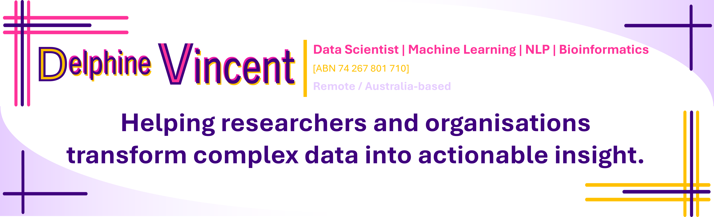
I have accrued 25 years of experience in life science research, quantitative analysis, bioinformatics, and scientific communication.
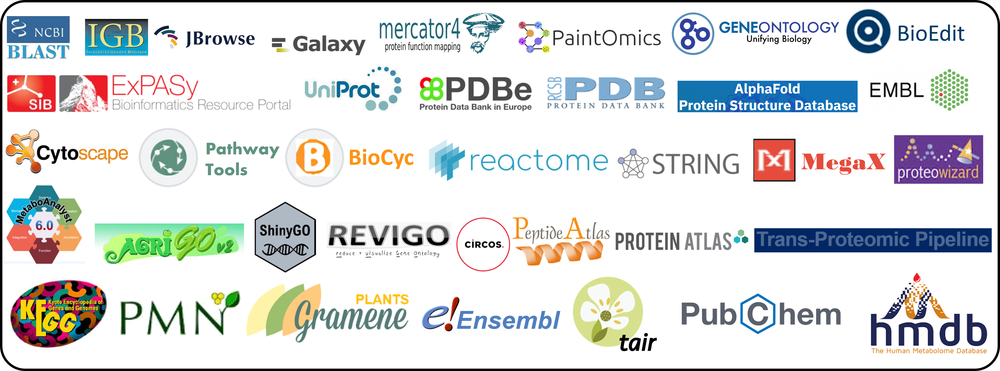
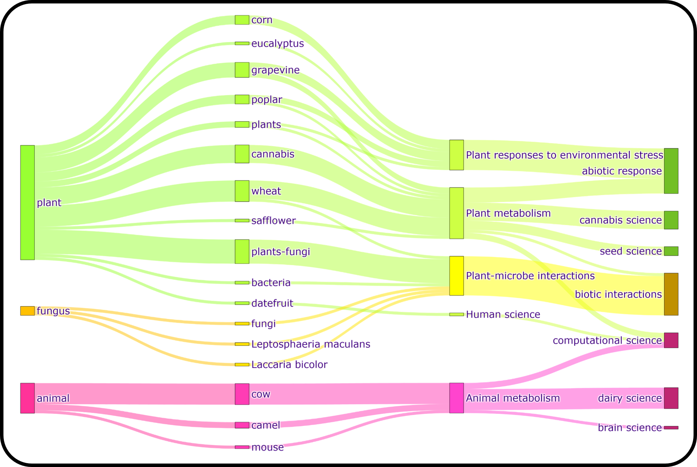
I have now become a data science, machine learning (ML), and Natural Language Processing (NLP) specialist, as well as a front-end developer, by undertaking the following certifications and applied projects:
Training focus: SQL, Python 3, Tableau, Excel, and GitHub (syllabus).
Applied outcome: I applied my data science and Python skills to the largest proteogenomics dataset to date to refine wheat genome annotation, leading to a published study in large-scale wheat proteogenomics (DOI 10.3390/ijms25168614).
Further details: More details are available in "Big Data".
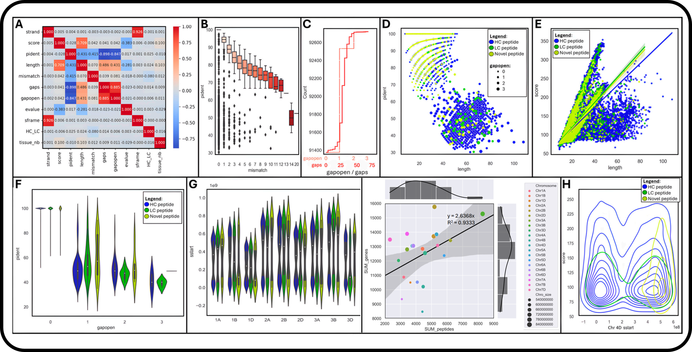
Training focus: Supervised and unsupervised learning, ensemble methods, Support Vector Machines, recommender systems, Naive Bayes, deep learning, and neural networks using Python (syllabus).
Applied outcome: I subsequently applied these skills across a diverse portfolio of research and analytics projects spanning multi-omics, metabolomics, bibliometrics, anomaly detection, recommendation systems, and scientific career mapping. These projects combined exploratory data analysis (EDA), feature engineering, clustering, supervised and unsupervised machine learning, natural language processing (NLP), and interactive visualisation to uncover interpretable patterns in complex biological, behavioural, and textual datasets.
Further details: For a full list of my ML and NLP projects, see "Machine Learning and NLP".
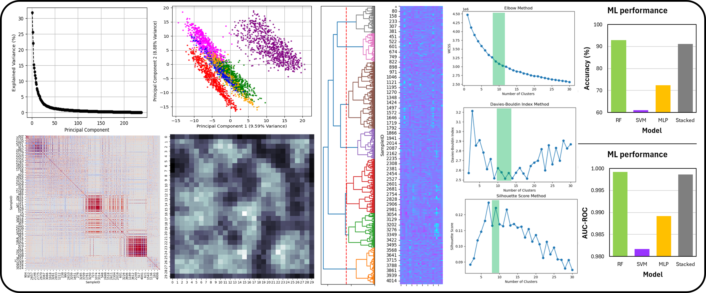
Training focus:Extract meaning from text, create chatbots, and build neural networks using SQL and Python (syllabus).
Applied outcome: I subsequently applied these skills to generate a roadmap of my career from all the scientific articles and reports I co-authored.
Further details: For a full list of my ML and NLP projects, see "Machine Learning and NLP".
Training focus: Website structure, styling, deployment, and version control using HTML, CSS, JavaScript, and GitHub Pages (syllabus).
Applied outcome: Using HTML, JavaScript, and CSS, I created my own professional website — the very one you are currently browsing. I also designed and deployed a website for Data Biome.
Further details: More information on my website workflow is available in "CodeCademy Skill Path - Build a website" and the Data Biome website project.
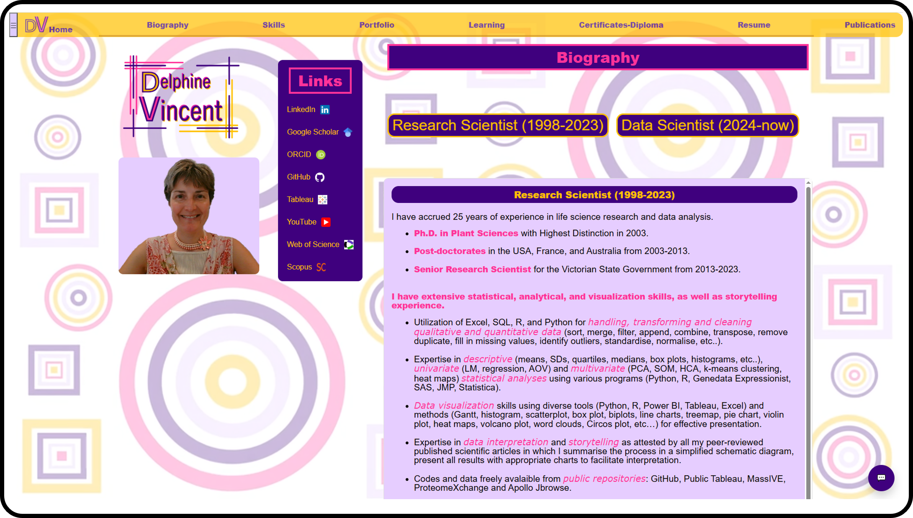
Training focus: Prompt design strategies for productive and reliable interaction with generative AI systems (syllabus).
Applied outcome: This course strengthened my ability to interact efficiently with generative AI systems and to integrate them thoughtfully into scientific, analytical, and creative workflows.
Further details: More details are available in "CodeCademy Course - Learn Prompt Engineering".
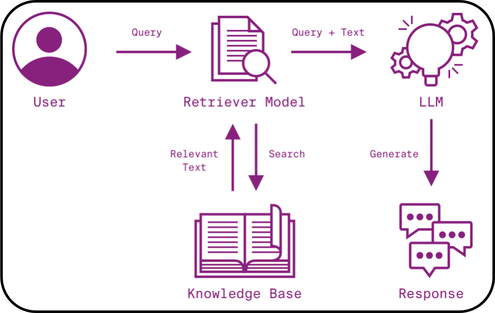
Training focus: Python-based chatbot design and implementation (syllabus).
Applied outcome: I learned how to create a chatbot with Python and implemented a closed-domain chatbot for this very website. You can find it in the bottom right corner of the site. Give it a try — responses may take a little time to appear.
Further details: More details on the development of my chatbot are available in "CodeCademy Skill Path - Build a chatbot in Python".
Training focus: Foundations of large language models and text-based generative artificial intelligence (syllabus).
Applied outcome: This course gave me a solid grounding in how LLMs work and how they can support text analysis, content generation, retrieval, and human–AI interaction.
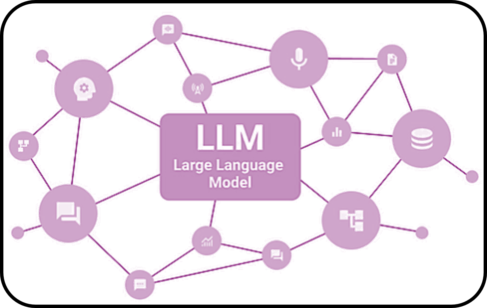
Training focus: Cloud-computing fundamentals, AWS infrastructure concepts, the AWS Management Console, storage, compute, networking, AI/ML foundations, and core AWS services.
Applied outcome: I am expanding my cloud-computing capability through a structured, self-directed AWS Educate pathway. This training strengthens my understanding of cloud-based environments relevant to data science, machine learning, bioinformatics, web deployment, scalable storage, compute resources, and reproducible analytical workflows.
I have completed foundational AWS Educate training badges covering the AWS Management Console, Cloud Computing 101, Storage, Compute, and Networking. These courses introduced key concepts including AWS global infrastructure, shared responsibility, cost-awareness, Amazon S3, Amazon EC2, Amazon VPC, subnets, route tables, gateways, and cloud security fundamentals.
I am continuing this training sequentially through the available AWS Educate courses, progressing from the Getting Started series to the AI and Machine Learning series, followed by Core Concepts. In parallel, I am using Amazon SageMaker Studio Lab and an AWS Free Tier account as hands-on practice environments.
Further details: More details are available in "AWS Educate / Amazon Web Services".
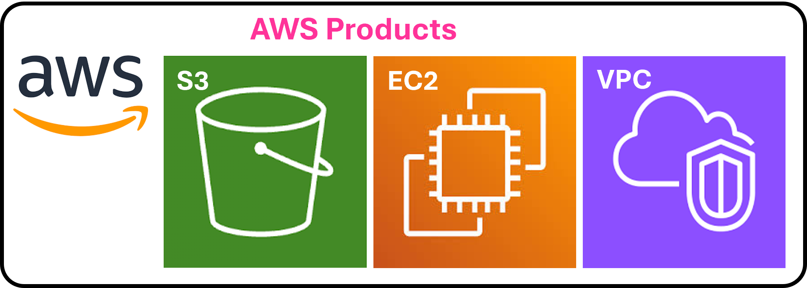
Creative workflow: Using Python and FFmpeg, I automate the creation of aesthetic photo montages with ambient sounds from my large collection of digital images.
Applied outcome: These automated visual stories are published on YouTube and TikTok as part of my creative project.
Further details: More details are available here.
I am available for consulting projects in data science, machine learning, NLP, bioinformatics, and scientific analytics.
I operate as an independent consultant in Australia under a registered sole-trader business structure.
This form is intended for genuine consulting, collaboration, or speaking enquiries.
Please provide a short project summary using your professional or institutional email address where possible.
I work primarily in a Microsoft Windows environment and am fully proficient with the Microsoft 365 productivity and collaboration ecosystem. I use these tools to manage analytical projects, prepare technical and scientific documents, communicate with collaborators, organise project information, and deliver reports, presentations, dashboards, and shared resources.
I use Windows-based computers for data science, scientific computing, website development, file management, cloud access, communication, and administrative work. My regular working environment includes VS Code, JupyterLab, Python and Conda environments, GitHub Desktop, web browsers, command-line tools, and specialist analytical software.
I use Word extensively to prepare and edit scientific manuscripts, technical reports, grant and project documents, resumes, cover letters, reviewer responses, standard operating procedures, website guidance, and client-facing documentation.
I use Excel for inspecting, cleaning, structuring, validating, summarising, and presenting quantitative and categorical data. It is particularly useful for rapid quality control, metadata review, tabular reporting, and communication with collaborators who require accessible data outputs.
I use PowerPoint to transform analytical and scientific results into clear visual narratives for technical and non-technical audiences. My presentations include conference talks, lectures, client reports, project summaries, workflow diagrams, and stakeholder briefings.
I use Power BI to build interactive dashboards and visual reports that support exploratory analysis, project monitoring, scientific interpretation, and communication of complex datasets.
I use Teams, Outlook, and OneNote to coordinate projects, communicate with collaborators and clients, document decisions, organise meetings, and maintain accessible records of ongoing work.
I use SharePoint and OneDrive for cloud-based document storage, controlled file sharing, collaborative editing, version management, and access to project resources across devices and organisations.
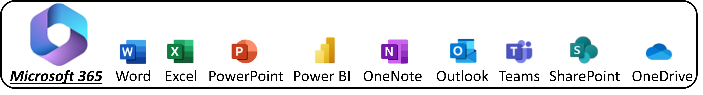
I am also familiar with Apple macOS and can work across Windows and Mac environments when collaborating with research teams or using platform-specific scientific and analytical software.
Technical highlights: Windows • Microsoft 365 • Word • Excel • PowerPoint • Power BI • Outlook • Teams • OneNote • SharePoint • OneDrive • Windows Terminal • PowerShell • macOS
I use a broad technical stack spanning Python, R, SQL, web development, machine learning, natural language processing, automation, data visualisation, scientific computing, deployment, and AI-assisted workflows. I select tools according to the analytical question, dataset, deployment environment, and intended audience, with an emphasis on reproducibility, transparency, and maintainable code.
Python is my principal programming language for data science, machine learning, bioinformatics, natural language processing, automation, scientific analysis, web backends, and multimedia processing. I develop reproducible workflows in Jupyter Notebook and JupyterLab, and write modular scripts in VS Code.
I use established Python libraries to build end-to-end analytical pipelines, from raw-data processing through statistical modelling, machine learning, visualisation, reporting, and deployment.
I use Python-based NLP tools to structure, analyse, compare, and interpret large collections of free text, scientific publications, website content, profile descriptions, and research documents.
I use Python to automate multimedia processing for scientific communication, website assets, and creative visual-storytelling projects.
I use R and RStudio for statistical analysis, data transformation, biological data analysis, and publication-quality visualisation, particularly when working with established scientific and biostatistical workflows.
I use SQL to query, filter, join, aggregate, and restructure relational data. I work with SQLite and SQLiteStudio for local database development, testing, and analysis, and integrate SQL outputs with Python, Excel, dashboards, and reporting workflows.
I develop and maintain websites using HTML, CSS, and JavaScript, and also work with WordPress and Elementor for content-managed websites. My work covers design, responsive layout, accessibility, interactive components, forms, deployment, maintenance, and client handover.
I develop lightweight applications and interfaces that make analytical results and website information easier to access. This includes Python APIs, retrieval-based chatbots, and interactive user interfaces.
I use a combination of notebook, IDE, command-line, and environment-management tools to create, test, document, and maintain reproducible analytical and web-development projects.
I use Git and GitHub to manage code versions, document analytical workflows, publish project resources, deploy websites, and make code, reports, figures, and selected datasets openly accessible.
I deploy and maintain analytical and web resources across static hosting, managed application hosting, shared web hosting, and cloud-learning environments.
I use generative AI tools as structured assistants within coding, scientific, analytical, writing, troubleshooting, and web-development workflows. I retain responsibility for validating code, checking factual accuracy, reviewing outputs, protecting confidential information, and ensuring that final deliverables remain technically sound and fit for purpose.
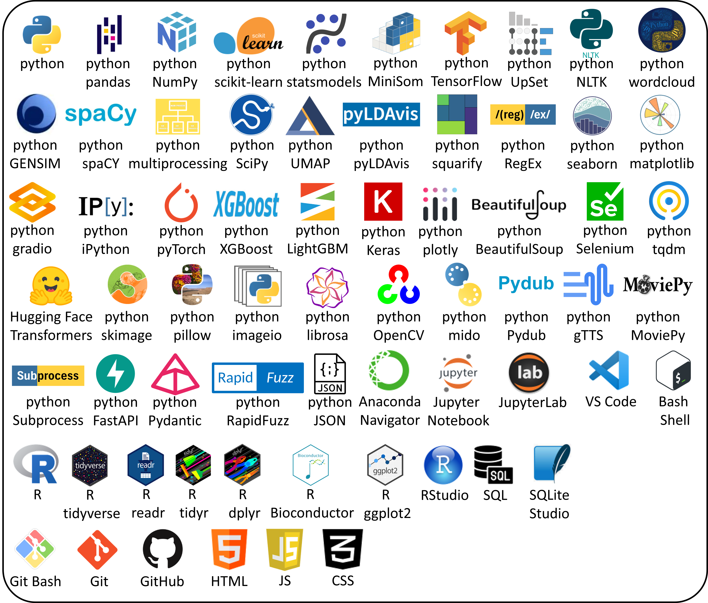
Most of my Python, SQL, R, HTML, CSS, and JavaScript projects are documented through GitHub repositories. These include programs and notebooks for proteogenomics, multi-omics integration, metabolomics, biomarker discovery, machine learning, NLP, publication mining, recommendation systems, in silico protein digestion, website development, chatbot retrieval, and multimedia automation.
Explore my GitHub repositories, source code, datasets, notebooks, and analytical reports
Technical highlights: Python • pandas • NumPy • SciPy • scikit-learn • TensorFlow • PyTorch • XGBoost • NLP • Hugging Face • BERTopic • FastAPI • R • Bioconductor • SQL • SQLite • HTML5 • CSS3 • JavaScript • WordPress • Elementor • JupyterLab • VS Code • Conda • Git • GitHub • GitHub Pages • Render • WebCentral • cPanel • AWS • Docker • ChatGPT • Copilot • LM Studio
I design and implement statistical, machine learning, and natural language processing workflows for biological, experimental, behavioural, textual, and complex multidimensional datasets. My work spans the full analytical lifecycle, from defining the research question and retrieving data through data preparation, modelling, validation, interpretation, visualisation, and reporting.
I combine statistical rigour with domain knowledge and reproducible coding practices to ensure that analytical outputs are accurate, interpretable, and relevant to the scientific or business question being addressed.
I begin by translating a research, technical, or business question into a structured analytical plan. This includes identifying the appropriate data, defining variables and outcomes, selecting suitable statistical or machine learning methods, and establishing validation and reporting criteria.
I retrieve, combine, clean, and restructure data from spreadsheets, databases, public repositories, scientific instruments, websites, APIs, and text documents. I prepare robust analysis-ready datasets while preserving metadata, provenance, and reproducibility.
I evaluate data quality before modelling and apply transformations appropriate to the dataset, analytical method, and experimental context.
I use descriptive statistics and exploratory visualisation to understand data distributions, identify trends and anomalies, assess relationships, and guide subsequent modelling decisions.
I apply univariate and multivariate statistical methods to test hypotheses, estimate effects, compare groups, and quantify relationships while accounting for assumptions and multiple testing.
I use multivariate methods to reduce dimensionality, detect hidden structure, compare samples, identify correlated features, and reveal dominant sources of variation.
I develop supervised models for classification, regression, ranking, prioritisation, and prediction. Model choice is guided by dataset size, feature structure, interpretability requirements, and the intended use of the output.
I use unsupervised learning to identify naturally occurring groups, latent structure, unusual observations, and complex relationships when a predefined response variable is unavailable.
I design NLP workflows for scientific documents, publication metadata, website content, profile descriptions, witness reports, free-text survey fields, and other unstructured text collections.
I use deep-learning and transformer-based methods when dataset size, complexity, and project objectives justify their use, while maintaining a focus on model validation and interpretability.
A substantial part of my work involves identifying variables, peptides, proteins, metabolites, genes, or text-derived features that contribute most strongly to group separation, prediction, or biological interpretation.
I evaluate models using methods appropriate to the analytical question and data structure, with particular attention to data leakage, overfitting, class imbalance, grouped samples, and generalisability.
I place strong emphasis on understanding why a model produces a result rather than reporting predictive performance alone. I combine model outputs with statistical evidence, domain knowledge, pathway information, and biological or operational context.
I deliver analytical work in formats suited to technical specialists, researchers, clients, reviewers, and non-technical stakeholders.
I use both specialised statistical software and open-source programming environments, selecting the most appropriate combination for each project.
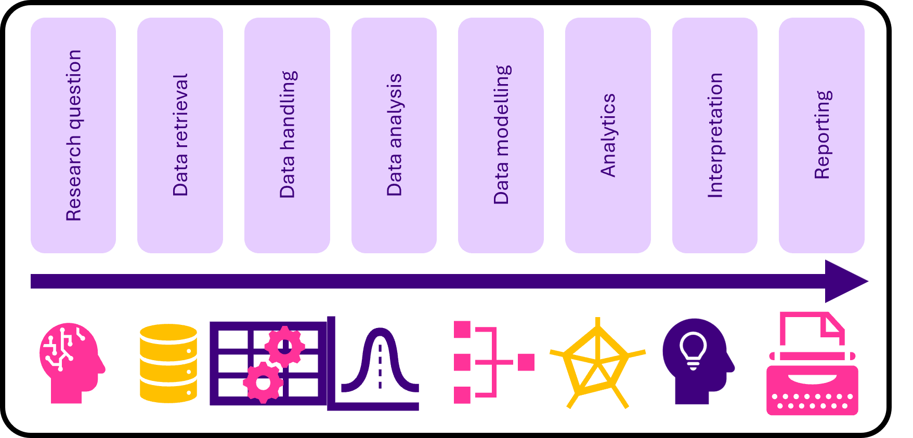
Technical highlights: exploratory data analysis • statistical inference • ANOVA • regression • PCA • LDA • clustering • Random Forest • XGBoost • support vector machines • neural networks • NLP • TF-IDF • topic modelling • transformers • embeddings • feature selection • biomarker discovery • cross-validation • model interpretation • reproducible reporting
I have more than two decades of experience applying bioinformatics, biological databases, sequence analysis, pathway analysis, network biology, proteomics, metabolomics, and genome-browser tools to interpret complex life-science datasets. My work spans plant science, microbiology, dairy science, medicinal cannabis, wheat proteogenomics, multi-omics integration, biomarker discovery, and scientific data mining.
I use these resources to move from raw experimental outputs to biologically meaningful conclusions by combining sequence evidence, functional annotation, structural information, pathways, molecular interactions, genome context, and published biological knowledge.
I use sequence-analysis and genome-annotation tools to identify proteins and genes, compare sequences, validate peptide mappings, inspect gene models, and investigate genome structure.
I use genome browsers to visualise experimental evidence in genomic context, inspect gene structures, compare annotations, and evaluate peptide support for coding regions and transcript isoforms.
In my recent wheat proteogenomics work, I developed a genome-guided pipeline to project peptide evidence onto the wheat reference genome, distinguish within-exon from exon-spanning peptides, validate translated genomic sequence, and generate Apollo/JBrowse tracks for annotation review.
I use protein databases and structural resources to identify proteins, retrieve curated annotations, evaluate domain and functional information, and investigate experimentally determined or predicted structures.
I use Gene Ontology and enrichment-analysis tools to determine which molecular functions, biological processes, cellular components, and pathways are over-represented among selected genes or proteins.
I routinely integrate enrichment results with experimental direction, effect size, clustering patterns, protein interactions, and domain knowledge rather than relying on enrichment scores alone.
I use pathway databases and multi-omics platforms to connect genes, proteins, and metabolites into coherent biological processes and to compare responses across molecular layers.
In recent multi-omics projects, I integrated transcriptomic, proteomic, metabolomic, and phenotypic data to identify biomarkers, classify response profiles, assess genetic rescue, and construct interpretable models of biological regulation.
I use interaction databases and network-visualisation platforms to identify functional modules, interaction partners, central proteins, enriched biological processes, and candidate mechanisms.
I use proteomics databases and software to identify proteins and peptides, inspect peptide evidence, validate protein assignments, compare datasets, and support biological interpretation.
My proteomics work includes protein identification, peptide filtering, quantitative analysis, biomarker discovery, proteogenomics, public-data reuse, and preparation of large datasets for reproducible analysis.
I use metabolite and chemical databases to identify compounds, retrieve molecular properties, investigate biochemical roles, and connect metabolomics features with pathways and published evidence.
I use evolutionary and phylogenetic tools to compare sequences, examine relatedness, and support interpretation of gene and protein families.
My bioinformatics approach combines database searching with computational analysis and critical biological interpretation. I cross-check information across multiple resources because annotations, identifiers, pathway assignments, and interaction evidence can differ between databases.
Technical highlights: BLAST • JBrowse • Apollo • GFF3 • BED tracks • Ensembl Plants • Gramene • TAIR • UniProtKB • ExPASy • PDBe • RCSB PDB • AlphaFold • Gene Ontology • ShinyGO • AgriGO • REVIGO • KEGG • Reactome • BioCyc • PaintOmics • STRING • Cytoscape • MetaboAnalyst • PeptideAtlas • ProteoWizard • Trans-Proteomic Pipeline • HMDB • PubChem • MEGA • multi-omics integration • proteogenomics
I create clear, accurate, and publication-ready visualisations to explore data, reveal patterns, compare groups, communicate uncertainty, and translate complex analytical results into accessible insights. My visualisation work spans scientific research, machine learning, bioinformatics, dashboards, technical reports, conference presentations, websites, and stakeholder communication.
I select chart types according to the structure of the data and the message that needs to be communicated, rather than applying a single visual style to every problem. My workflow includes exploratory plotting, iterative refinement, accessibility checks, annotation, and preparation of final outputs for screen, print, publication, or interactive use.
I begin by defining the purpose of the visualisation: exploration, comparison, explanation, monitoring, publication, or decision support. I then select the chart type, level of detail, annotation, and format best suited to the audience and analytical objective.
I use distribution plots to understand the shape, spread, central tendency, variability, skewness, multimodality, outliers, and quality of numerical data before formal modelling.
I create visualisations that reveal relationships between variables, highlight trends, identify associations, and expose unusual or influential observations.
I use comparative plots to show differences between categories, experimental conditions, treatments, genotypes, clusters, or model outputs.
I visualise how individual categories contribute to a total while ensuring that proportions remain easy to compare and interpret.
I use temporal graphics to display trends, cycles, interventions, transitions, and changes over time.
I visualise complex multidimensional datasets using projection, clustering, matrix, and network-based representations that help reveal latent structure and sample relationships.
I create model-focused visualisations to assess predictive performance, compare algorithms, explain errors, and communicate the factors driving predictions.
I create specialised scientific graphics for omics, genome annotation, biomarker discovery, pathway interpretation, and molecular interaction studies.
I visualise patterns in textual data to summarise language use, themes, semantic structure, and relationships within document collections.
I use geographic visualisation to examine spatial distributions, regional trends, hotspots, and relationships between location-based variables.
I develop interactive dashboards that allow users to filter, compare, and explore data without needing to interact directly with the underlying code.
I prepare figures for manuscripts, reports, presentations, and supplementary materials with careful attention to consistency, resolution, annotation, and readability.
I use a combination of coding, dashboard, and office-based tools depending on the complexity, interactivity, publication requirements, and intended audience.
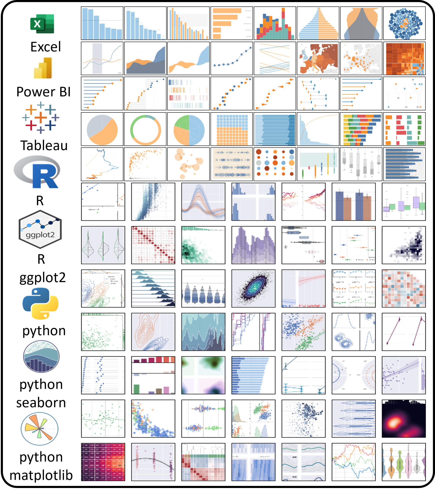
Technical highlights: Matplotlib • Seaborn • Plotly • ggplot2 • Tableau • Power BI • Excel • histograms • box plots • violin plots • heat maps • volcano plots • PCA • UMAP • networks • Sankey diagrams • dashboards • geospatial maps • model diagnostics • publication-ready figures • scientific storytelling
I transform complex scientific, analytical, and technical results into clear, accurate, and engaging narratives for researchers, clients, reviewers, stakeholders, students, and non-technical audiences. My work combines data interpretation, visual design, scientific reasoning, and structured communication to ensure that results are not only correct, but also meaningful, memorable, and useful for decision-making.
As an author of approximately 40 peer-reviewed scientific publications, an experienced conference presenter, journal reviewer, editor, consultant, and data scientist, I have extensive experience communicating complex findings through manuscripts, reports, dashboards, presentations, posters, lectures, websites, and publication-ready figures.
I interpret analytical results in the context of the original research or business question, ensuring that statistical significance, biological relevance, practical importance, uncertainty, and limitations are considered together.
My interpretation process integrates statistical outputs with domain expertise, biological databases, published literature, pathway information, model diagnostics, and experimental context.
I organise results into a logical sequence that guides the audience from the original question to the evidence, interpretation, conclusion, and recommended next steps.
I select visual formats that accurately represent the data while supporting rapid understanding. Depending on the audience and objective, I use charts, dashboards, diagrams, workflows, infographics, tables, or schematic models.
I create publication-ready scientific graphics that combine experimental results, molecular mechanisms, biological pathways, structural information, and explanatory annotation.
I design dashboards that allow users to explore large or complex datasets through filters, comparisons, maps, summaries, and interactive visual elements.
I prepare structured scientific and technical documents that communicate methods, results, interpretations, limitations, and conclusions with precision.
I adapt technical content for clients, managers, collaborators, students, and general audiences without sacrificing accuracy.
I have presented research findings at scientific conferences, seminars, stakeholder meetings, and professional events. My presentations combine strong visual structure with a clear spoken narrative and audience-focused interpretation.
Finding the LMA needle in the wheat haystack proteome Mining the wheat grain proteome The power of three for shotgun proteomics Proteomics tools for medicinal cannabis Milk top-down proteomics Proteomics rocks my world MALDI Biotyper: an alternative for identifying microorganisms Stagonospora nodorum effector mode of action in wheat Fungal secretomes: not so secret anymore Apprendre à faire du vin aux États-Unis
I design scientific posters that present a complete research story within a limited visual space, using concise text, clearly ordered sections, high-quality figures, and prominent conclusions.
Finding the LMA needle in the wheat haystack proteome Top-down, middle-down and bottom-up proteomics of medicinal cannabis Optimisation of protein extraction from medicinal cannabis Top-down proteomics investigation of age gelation in milk Analysis of intact major milk proteins using LC-MS Bottom-up and top-down analysis of milk proteins using LC-MS/MS A proteomics approach to dissect SnToxA mode of action The secretome of Laccaria bicolor High-resolution analysis of fungal secretomes Water-deficit-responsive proteins in poplar roots
I prepare lectures and educational materials that explain scientific principles, analytical methods, and experimental workflows in a structured and visually accessible manner.
Analysis of peptides and proteins using mass-spectrometry-based proteomics Protéomique quantitative : électrophorèse bidimensionnelle
I use Tableau to create interactive visual stories from scientific, social, geographic, and public datasets. These dashboards allow users to explore trends, filters, categories, maps, and model outputs directly.
Dating-app profiles, NLP, and machine learning Metadata from approximately 120,000 scientific publications Wildlife strikes involving aircraft in the United States Tree census and household income in New York Worldwide volcanic eruptions Rotten Tomatoes films, genres, studios, and audience scores
I use Power BI to support scientific project analysis, explore large datasets, compare experimental conditions, and communicate major findings through interactive and exportable reports.
Safflower proteomics and metabolomics dashboards Large-scale wheat proteomics dashboards
I prepare reports and presentations that help collaborators and clients understand what was done, what the results mean, how confident the conclusions are, and what should happen next.
I use a broad combination of analytical, visual, writing, and presentation tools to produce outputs suited to each audience and delivery format.
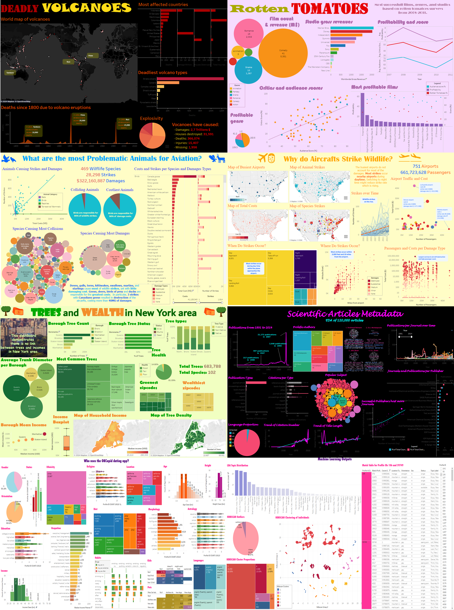
Technical highlights: data interpretation • scientific reasoning • visual storytelling • Tableau • Power BI • Python • R • dashboards • manuscripts • conference talks • posters • lectures • graphical abstracts • biological schematics • stakeholder reporting • publication-ready figures
I have extensive experience across the complete scientific-publication lifecycle as an author, guest editor, and peer reviewer. I have co-authored approximately 40 peer-reviewed publications and contributed to manuscripts spanning plant science, proteomics, metabolomics, bioinformatics, dairy science, microbiology, and data analytics.
My publication work includes experimental and analytical design, data interpretation, manuscript preparation, figure and table development, journal selection, responses to reviewers, revision, and final publication. I also contribute to scientific quality assurance through journal reviewing and editorial leadership.
I write and revise scientific manuscripts that translate complex experimental and analytical work into clear, structured, and defensible scientific narratives.
I have substantial experience revising manuscripts following peer review and preparing detailed, evidence-based responses to editors and reviewers.
I support the strategic and practical aspects of scientific publication, from identifying suitable journals to preparing submission materials.
View my publications and citation record on Google Scholar
Journal highlights: Nature Communication • Journal of Proteome Research • Scientific Reports • GigaScience • Plant Physiology • Molecular Plant Pathology • New Phytologist • Journal of Dairy Science • Food Chemistry • Biomolecules • Proteomes • IJMS • PLOS ONE • Proteomics • Frontiers in plant science • Frontiers in genetics • Plant, cell & environment • Functional & integrative genomics • Journal of experimental botany • Phytochemistry • NFS Journal
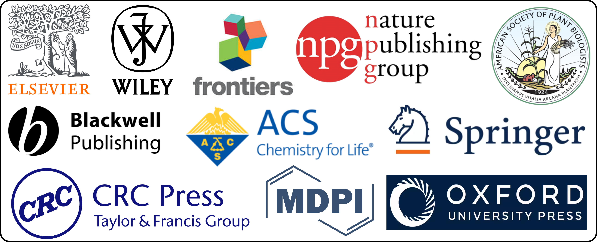
I have acted as a guest editor and Research Topic editor for multiple scientific journals, helping define thematic scope, attract relevant submissions, coordinate peer review, and support publication of coherent collections.
Frontiers in Plant Science
How Can Secretomics Help Unravel the Secrets of Plant–Microbe Interactions? Secretomics: More Secrets to Unravel on Plant–Fungus Interactions, Volume I Secretomics: More Secrets to Unravel on Plant–Fungus Interactions, Volume II
Proteomes
Proteomics: Technologies and Their Applications
Biomolecules
Plant Adaptation to Their Biotic and Abiotic Environment Through the Lens of Secretomics Sowing the Seed to Ensure the Future of Plant Proteomics: Commemorative Issue in Honour of Dr Dominique Job
International Journal of Molecular Sciences
I have reviewed manuscripts for scientific journals since 2006. My reviews assess scientific validity, methodological rigour, analytical appropriateness, interpretation, novelty, reproducibility, and clarity of presentation.
I approach authorship, editing, and peer review with a consistent emphasis on scientific integrity, transparency, fairness, and constructive communication.
Technical highlights: scientific authorship • manuscript preparation • journal submission • peer review • guest editing • Special Issues • Research Topics • reviewer responses • publication strategy • scientific integrity • technical editing • figure and table preparation • Google Scholar • ORCID
I use generative artificial intelligence as a structured professional assistant across scientific research, data analysis, machine learning, coding, website development, technical writing, project documentation, and client communication.
My approach combines prompt engineering, domain expertise, iterative refinement, source verification, and human quality control. I use AI to accelerate complex work while retaining responsibility for the accuracy, interpretation, confidentiality, and suitability of every final output.
I design prompts that provide sufficient context, define the task precisely, establish constraints, identify the intended audience, and specify the required format and level of detail.
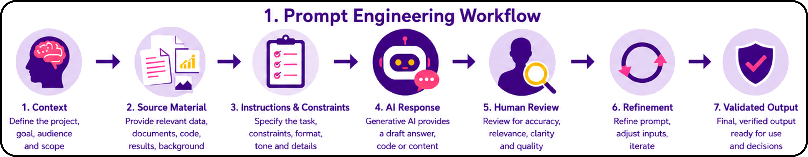
I use ChatGPT as an interactive assistant for complex professional projects, particularly when tasks require a combination of scientific knowledge, analytical reasoning, coding, editing, troubleshooting, and structured communication.
For substantial projects, I use a collaborative and iterative workflow rather than relying on a single prompt.
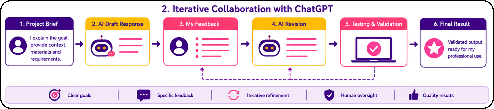
I also use Google Gemini as an alternative AI assistant for drafting, comparison, brainstorming, summarisation, technical explanation, and independent review of selected outputs.
For confidential or privacy-sensitive work, I use LM Studio to run a language model locally on my computer rather than sending project material to a cloud-hosted AI service.
My current local model is Gemma 4 E4B, which can be run through LM Studio as an on-device language model. This provides a private environment for tasks involving unpublished documents, confidential assessments, internal reports, sensitive client material, or other information that should remain on the local computer. :contentReference[oaicite:0]{index=0}
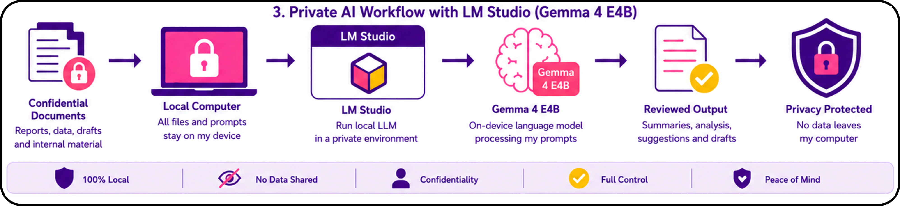
My scientific prompts combine project context with experimental design, numerical results, analytical assumptions, manuscript requirements, and supporting source material.
For coding tasks, I provide the existing script or code block, describe the expected behaviour, identify the error or limitation, and specify the required inputs and outputs.
For website tasks, I provide the relevant HTML, CSS, JavaScript, screenshots, and a precise description of the required desktop and mobile behaviour.
I do not treat AI-generated output as automatically correct. Every response is reviewed in relation to the original evidence, professional context, and intended use.
These AI-assisted workflows improve efficiency while preserving the scientific judgement, technical oversight, confidentiality, and critical reasoning required for high-quality professional work.
Technical highlights: prompt engineering • generative AI • ChatGPT • Google Gemini • LM Studio • Gemma 4 E4B • local language models • privacy-aware AI • zero-shot prompting • one-shot prompting • few-shot prompting • iterative refinement • task decomposition • scientific editing • data analysis • Python development • machine learning • website development • human-in-the-loop review • quality assurance
Over more than two decades in life-science research, I have applied systems biology, functional genomics, proteomics, metabolomics, proteogenomics, bioinformatics, and integrative data analysis to investigate how organisms respond to genetic, developmental, environmental, microbial, and production-related influences.
My work connects molecular measurements with biological context by integrating proteins, metabolites, transcripts, genome annotations, physiological traits, pathways, and published knowledge. These projects span wheat, safflower, medicinal cannabis, grapevine, poplar, eucalyptus, maize, plant–fungus interactions, dairy systems, and mammalian metabolomics.
My contribution to these studies extends beyond the generation of individual molecular datasets. I design and apply analytical strategies that move from experimental observations to integrated and biologically interpretable models.
This study combined food chemistry, antioxidant-assay analysis, statistical modelling, and machine learning to evaluate how mixtures of phenolic compounds behave across commonly used total antioxidant capacity methods. Rather than assuming that the response of a mixture equals the sum of its individual components, the study examined assay- and composition-dependent departures from expected additive behaviour.
Objective: Assess the accuracy and consistency of four antioxidant assays and develop a transparent analytical framework for identifying phenolic-compound mixtures whose measured responses deviate from model-predicted additive behaviour.
Experimental system: Defined phenolic standards and binary mixtures were evaluated using the ABTS, DPPH, FRAP, and Total Phenolic Content (TPC) assays. Replicate-level measurements from CB1–CB5 mixture groups were analysed while preserving the relationship between technical replicates from the same experimental condition.
Analytical approach: Assay-specific exploratory analysis was combined with Linear Regression, Random Forest, and tuned XGBoost regression models. Grouped cross-validation and an independent grouped test set were used to prevent information leakage between related replicates. Deviations between observed and model-predicted gallic acid equivalent values were then used to classify mixture responses operationally as additive, positively deviating, or negatively deviating.
Scientific significance: The study provides a reproducible framework for assessing whether antioxidant-mixture measurements conform to expected response patterns. It highlights the importance of assay chemistry, mixture composition, grouped model validation, and cautious interpretation when evaluating apparent synergy or antagonism. The model-derived interaction classes represent analytical indicators for further investigation rather than direct proof of biochemical mechanisms.
Status: Published in Scientific Reports on 22 July 2026.
Assessing the Accuracy of Total Antioxidant Capacity Methods Using Machine Learning Approaches Python Code and Jupyter Notebook
Technical highlights: phenolic compounds • antioxidant capacity • ABTS • DPPH • FRAP • Total Phenolic Content • food chemistry • experimental design • grouped cross-validation • Linear Regression • Random Forest • XGBoost • residual-based classification • additive and non-additive responses • reproducible machine learning
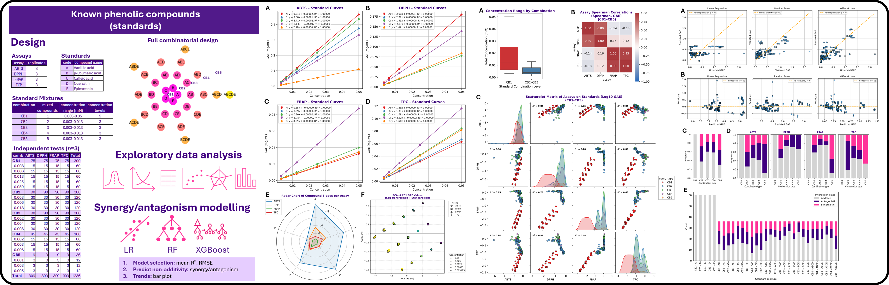
These projects combined large-scale wheat proteomics, functional genomics, genome annotation, stress biology, and biomarker discovery. My work included developing analytical workflows, processing large peptide and protein datasets, interpreting biological responses, and mapping experimental peptide evidence onto the wheat genome.
Community Resource: A Genome-Based Extension of Large-Scale Wheat Proteogenomics Community Resource: Large-Scale Proteogenomics to Refine Wheat Genome Annotations A Community Resource to Mass Explore the Wheat Grain Proteome and Its Application to the Late-Maturity Alpha-Amylase Problem Mining the Wheat Grain Proteome Proteomic Profiling of Developing Wheat Heads Under Water Stress A Functional Genomics Approach to Dissect the Mode of Action of the Stagonospora nodorum Effector Protein SnToxA in Wheat Development of an In-House Protocol for the OFFGEL Fractionation of Plant Proteins
Technical highlights: wheat proteomics • proteogenomics • peptide-to-genome mapping • tBLASTn • GFF3 • genome annotation • Apollo/JBrowse • biomarker discovery • large-scale biological data

This study integrated proteomics and metabolomics to characterise molecular changes occurring during safflower petal wilting and seed development. The work connected changes in proteins and metabolites with developmental processes, resource allocation, and seed maturation.
Integrated Proteomics and Metabolomics of Safflower Petal Wilting and Seed Development Power BI Dashboards Supporting the Safflower Study
Technical highlights: proteomics • metabolomics • multi-omics integration • developmental biology • Power BI • pathway interpretation

These studies established and optimised proteomics and extraction strategies for mature medicinal cannabis tissues. They addressed the analytical challenges presented by complex plant matrices and explored the value of molecular phenotyping for cultivar characterisation, gene annotation, and product research.
The Power of Three in Cannabis Shotgun Proteomics: Proteases, Databases and Search Engines A Multiple-Protease Strategy to Optimise the Shotgun Proteomics of Mature Medicinal Cannabis Buds Top-Down Proteomics of Medicinal Cannabis Optimisation of Protein Extraction from Medicinal Cannabis Mature Buds for Bottom-Up Proteomics Utilisation of a Design-of-Experiments Approach to Optimise Supercritical Fluid Extraction of Medicinal Cannabis Molecular Phenotyping of Medicinal Cannabis Strains: Enabling Genomic Selection and Gene Annotation
Technical highlights: medicinal cannabis • shotgun proteomics • top-down proteomics • protein extraction • multiple proteases • design of experiments • molecular phenotyping

A major theme of my earlier research was the study of proteins secreted during plant–fungus interactions. These projects examined fungal effectors, plant defence, pathogenicity, symbiosis, antimicrobial peptides, and the molecular dialogue occurring between plants and their associated microorganisms.
State of the World’s Fungi 2018: Plant-Killers—Fungal Threats to Ecosystems Effector Diversification Within Compartments of the Leptosphaeria maculans Genome Affected by Repeat-Induced Point Mutations The Multiple Facets of Plant–Fungal Interactions Revealed Through Plant and Fungal Secretomics Surveying the Potential of Secreted Antimicrobial Peptides to Enhance Plant Disease Resistance Secretomics of Plant–Fungus Associations: More Secrets to Unravel Secretome of the Free-Living Mycelium from the Ectomycorrhizal Basidiomycete Laccaria bicolor A Functional Genomics Approach to Dissect the Mode of Action of the SnToxA Effector in Wheat Hunting Fungal Secreted Proteins Down Proteomic Techniques for Plant–Fungal Interactions Identification and Functional Analysis of Magnaporthe oryzae Effectors Hunting Down Fungal Secretomes Using Liquid-Phase IEF Prior to High-Resolution 2-DE
Technical highlights: secretomics • fungal effectors • plant immunity • host–pathogen interactions • antimicrobial peptides • proteomics • functional genomics

These projects investigated how grapevine cultivars respond to water deficit, salinity, chilling, and osmotic stress. Transcriptomic, proteomic, metabolomic, and physiological evidence was integrated to distinguish early and late stress responses and identify cultivar-dependent molecular behaviour.
Water and Salinity Stress in Grapevines: Early and Late Changes in Transcript and Metabolite Profiles Transcript-Abundance Profiles Reveal Larger and More Complex Responses of Grapevine to Chilling than to Osmotic and Salinity Stress Systems Biology of Grapes Proteomic Analysis Reveals Differences Between Chardonnay and Cabernet Sauvignon and Their Responses to Water Deficit and Salinity Optimisation of Protein Extraction and Solubilisation for Mature Grape Berry Clusters
Technical highlights: grapevine • systems biology • transcriptomics • proteomics • metabolomics • abiotic stress • cultivar comparison

These studies examined how wheat, eucalyptus, poplar, and maize respond to water limitation across genotypes, tissues, developmental stages, and growing environments. The work linked proteomic variation with drought adaptation, water-use efficiency, photosynthesis, lignification, and metabolic adjustment.
Proteomic Profiling of Developing Wheat Heads Under Water Stress Proteomic Plasticity of Two Eucalyptus Genotypes Under Contrasted Water Regimes in the Field Genetic Variation in Drought Response and Water-Use Efficiency in Eight Populus Genotypes Genetic Variation and Drought Response in Two Populus Genotypes Impact of Water Deficit on the Leaf Proteome of Two Populus Genotypes POPSEC: Molecular Bases of Acclimation to Water Deficit in Poplar A Proteomic Study of Water-Deficit-Responsive Proteins in Poplar Roots Poplar Proteomics: Update and Future Challenges Plant Proteome Responses to Abiotic Stress Development of an In-House Protocol for OFFGEL Fractionation of Plant Proteins PROTICdb: A Web-Based Application to Store, Track, Query, and Compare Plant Proteome Data Water Deficits Affect Caffeate O-Methyltransferase, Lignification, and Related Enzymes in Maize Leaves Deciphering Genetic Variation in Proteome Responses to Water Deficit in Maize Leaves
Technical highlights: drought biology • plant proteomics • genotype comparison • water-use efficiency • photosynthesis • lignification • phenylpropanoid metabolism

These projects applied proteomics, lipidomics, serum biochemistry, and food analytics to dairy animals, milk, and model dairy products. The work addressed animal health, production systems, milk-protein characterisation, proteolysis, texture, rheology, and product stability.
A Large, Multisite Investigation into the Lipidomics of Survival in Dairy Cows Confinement- and Pasture-Based Dairy Herds Differ in Plasma Lipid Profiles Effects of Plasmin on Camel and Bovine Model Cheeses: Protein Degradation, Texture, and Rheology Associations Among Body Condition Score, Body Weight, and Serum Biochemistry in Dairy Cows Advancement of Milk-Protein Analysis: From Total Protein Determination to Proteomic Identification and Quantification Investigation of Age Gelation in UHT Milk Optimisation of Milk-Protein Top-Down Sequencing Using In-Source Collision-Induced Dissociation Quantitation and Identification of Intact Major Milk Proteins for High-Throughput LC-ESI-Q-TOF MS Analysis Milk Bottom-Up Proteomics: Method Optimisation
Technical highlights: dairy science • lipidomics • milk proteomics • serum biochemistry • top-down proteomics • food functionality • proteolysis • rheology

This study used untargeted metabolomics to investigate the effects of ergotamine on the central nervous system in a mouse model. The analytical workflow examined broad metabolic changes and supported interpretation of biochemical pathways affected by exposure.
Effects of Ergotamine on the Central Nervous System Using Untargeted Metabolomics in a Mouse Model
Technical highlights: untargeted metabolomics • central nervous system • mouse model • multivariate analysis • pathway interpretation
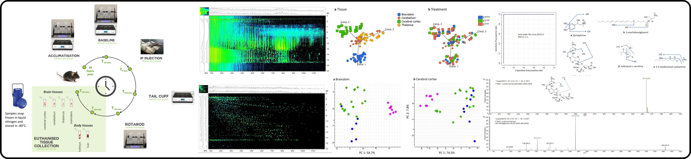
Across these projects, I contributed a combination of experimental, computational, interpretative, and communication expertise.

View my complete publication record on Google Scholar
Technical highlights: systems biology • post-genomics • proteomics • metabolomics • lipidomics • functional genomics • proteogenomics • secretomics • multi-omics integration • biomarker discovery • pathway analysis • network biology • genome annotation • plant stress biology • dairy science • scientific publication
I developed and applied a series of large-scale, reproducible analytical workflows to characterise the wheat grain proteome, investigate late-maturity alpha-amylase, and map mass-spectrometry-derived peptide evidence onto the wheat reference genome.
These connected projects progressed from laboratory-method optimisation and high-throughput proteome screening to biomarker discovery, genome annotation, genome-browser resource development, and machine learning. They required the integration of thousands of biological samples, hundreds of mass-spectrometry files, millions of peptide observations, genome annotations, statistical analyses, bioinformatics, and custom Python workflows.
Bread wheat, Triticum aestivum, has a large and complex hexaploid genome. Connecting experimentally observed peptides with genes, transcripts, and genomic coordinates provides valuable evidence for protein expression, gene-model validation, cultivar comparison, and annotation refinement.
Objective: Develop a rapid, accurate, and reproducible workflow for extracting, digesting, identifying, and comparing proteins from large numbers of wheat grain samples.
Challenge: Wheat grain contains highly abundant storage proteins, starch, and other compounds that can interfere with protein extraction, digestion, peptide identification, and quantitative comparison.
Methods: Protein-extraction optimisation, enzymatic digestion, LC-MS/MS proteomics, peptide and protein identification, quality-control assessment, and comparative evaluation of analytical performance.
Mining the Wheat Grain Proteome
Technical highlights: wheat grain • protein extraction • enzymatic digestion • LC-MS/MS • shotgun proteomics • analytical optimisation • quality control
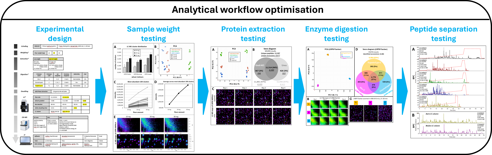
Objective: Apply the optimised proteomics workflow at scale to characterise protein and peptide profiles across thousands of wheat samples and investigate molecular features associated with late-maturity alpha-amylase.
Dataset: Proteomic profiles generated from 4,087 wheat grain samples, representing a large and diverse experimental collection of cultivars and grain material.
Methods: High-throughput data processing, peptide and protein filtering, metadata harmonisation, descriptive statistics, multivariate analysis, clustering, biomarker discovery, functional annotation, pathway analysis, and interactive Power BI visualisation.
Biological interpretation: Late-maturity alpha-amylase was associated with broad molecular remodelling rather than an isolated change in starch degradation. Affected grain showed evidence of altered central metabolism, gene-expression machinery, protein translation and folding, stress and defence responses, cellular organisation, storage-protein composition, and carbohydrate metabolism.
A Community Resource to Mass Explore the Wheat Grain Proteome and Its Application to the Late-Maturity Alpha-Amylase Problem Power BI Dashboards Supporting the Wheat Study
Technical highlights: 4,087 wheat samples • large-scale proteomics • biomarker discovery • multivariate analysis • pathway interpretation • Power BI • late-maturity alpha-amylase
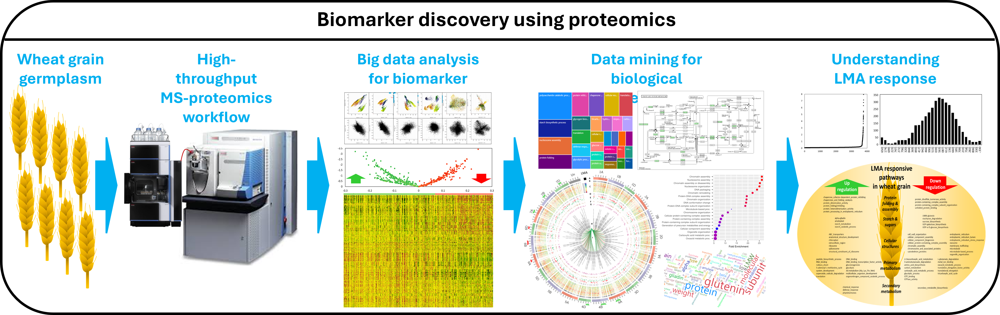
Objective: Map experimentally observed wheat peptides directly onto the reference genome to identify genomic regions supported by mass-spectrometry evidence and contribute to wheat genome-annotation refinement.
Approach: Peptide sequences were aligned against the wheat genome using a tBLASTn-based strategy. This sequence-driven approach searched for genomic regions capable of encoding the experimentally observed peptides, independently of their existing annotation status.
Community Resource: Large-Scale Proteogenomics to Refine Wheat Genome Annotations
Technical highlights: proteogenomics • tBLASTn • peptide alignment • genome coordinates • wheat genome annotation • BED files • genome-browser integration
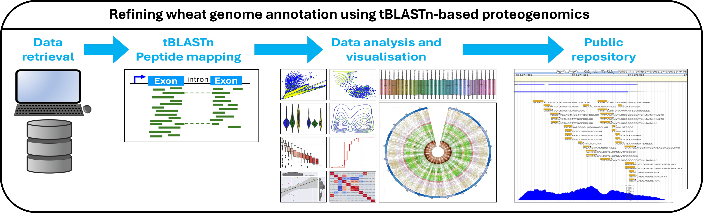
Objective: Develop a scalable, annotation-aware proteogenomics workflow to reconstruct experimentally identified wheat peptides at precise genomic coordinates, validate those projections rigorously, quantify protein-level support for high- and low-confidence gene models, and deploy the resulting evidence as an accessible community resource.
Dataset: Public wheat proteomics datasets comprising 577 raw mass-spectrometry files, approximately 1.0 TB of data, and 32 tissues and developmental stages were retrieved from PRIDE and MassIVE and reprocessed against the IWGSC RefSeq v2.1 high- and low-confidence wheat proteome.
Approach: Raw MS/MS data were searched using FragPipe/MSFragger, after which a custom GFF3-based Python workflow linked identified peptides to proteins, transcripts, coding sequences, genes, chromosomes, and strand orientation. Protein-space peptide coordinates were then converted into exon-resolved genomic coordinates and subjected to translation and coordinate-level validation before export as Apollo/JBrowse-compatible BED tracks.
Validation and biological significance: The workflow reconstructed valid genomic coordinates for the overwhelming majority of projected peptide–protein pairs across tissues, exon structures, transcript isoforms, homeologous loci, and strand orientations. Extensive peptide support confirmed most high-confidence gene models and provided strong experimental evidence for many low-confidence loci, indicating that a substantial proportion of LC annotations likely represent genuinely expressed protein-coding genes that merit future annotation review.
Community resource: The validated BED tracks allow researchers to inspect peptide evidence directly in its chromosome, gene, transcript, exon, and isoform context. Apollo/JBrowse views display dense peptide support across high-confidence loci, isoform-specific evidence, and extensively supported low-confidence genes that may be candidates for future reclassification.
Status: Article under revision in Journal or Proteome Research
Read the bioRxiv preprint: Community Resource: A Genome-Based Extension of Large-Scale Wheat Proteogenomics Explore the validated peptide tracks in Apollo/JBrowse
Technical highlights: FragPipe • MSFragger • Python • JupyterLab • GFF3 • IWGSC RefSeq v2.1 • exon-resolved peptide projection • translation validation • BED6 • BED12 • high-confidence and low-confidence gene models • Apollo • JBrowse • reproducible proteogenomics • genome-annotation refinement
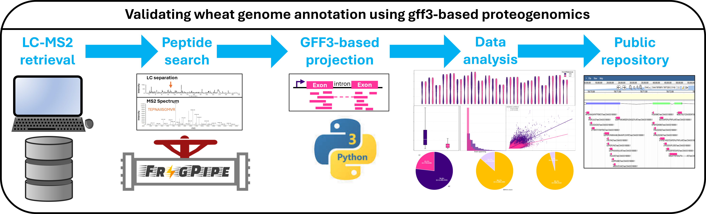
Objective: Reanalyse the large wheat peptide-profile dataset using machine learning to identify natural sample structure, classify proteomic patterns, and determine which peptides contribute most strongly to the detected groups.
Methods: Data filtering, feature engineering, dimensionality reduction, unsupervised clustering, classification, model evaluation, and feature-importance analysis.
Status: Article in preparation
View the related project in Machine Learning and NLP
Technical highlights: machine learning • clustering • classification • feature importance • wheat cultivar profiling • peptide biomarkers • Python
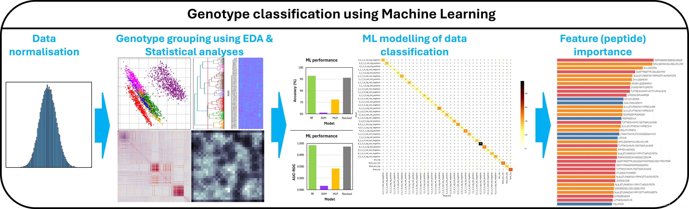
These projects required more than analysing a single large table. They involved coordinating heterogeneous files, metadata, sequence identifiers, annotation formats, biological hierarchies, quality-control rules, and publication outputs across several generations of the wheat resource.
Technical highlights: big data • wheat proteomics • 4,087 grain samples • 2.23 million non-redundant peptides • 8.29 million genome projections • Python • tBLASTn • GFF3 • translation validation • proteogenomics • Apollo/JBrowse • gene-model support • biomarker discovery • machine learning • reproducible science
This section showcases selected machine learning and natural language processing projects spanning multi-omics, metabolomics, bibliometrics, anomaly detection, recommendation systems, and scientific career analytics. Each project combines reproducible Python workflows with interpretable visual outputs and, where relevant, publication-oriented reporting.
Objective: Investigate the function of the root-specific FNRL gene in Arabidopsis thaliana by integrating phenotyping with transcriptomics, proteomics, metabolomics, machine learning, and bioinformatics. The study compared wild type plants, two independent loss-of-function mutants, and a GFP-complemented line to uncover molecular pathways associated with FNRL regulation.
Dataset: Multi-omics and phenotypic dataset comprising root RNA-seq, LC-MS/MS proteomics, GC-MS metabolomics, nitrate content measurements, and root length data across four genotypes and biological replicates.
Methods: Data cleaning and harmonisation, missing-value imputation, log transformation, cross-omics scaling, PCA, differential expression analysis, biomarker discovery based on mutant consistency and GFP rescue rules, hierarchical clustering, k-means clustering, LDA, Elastic Net and Random Forest modelling, plus bioinformatics mining using TAIR, UniProtKB, GO/AmiGO, KEGG, STRING, Cytoscape, PaintOmics and AraCyc.
Technical highlights: Python • multi-omics integration • biomarker discovery • clustering • LDA • Elastic Net • Random Forest • pathway analysis • network biology
Status: Article in preparation
Final report Python code and Jupyter notebook
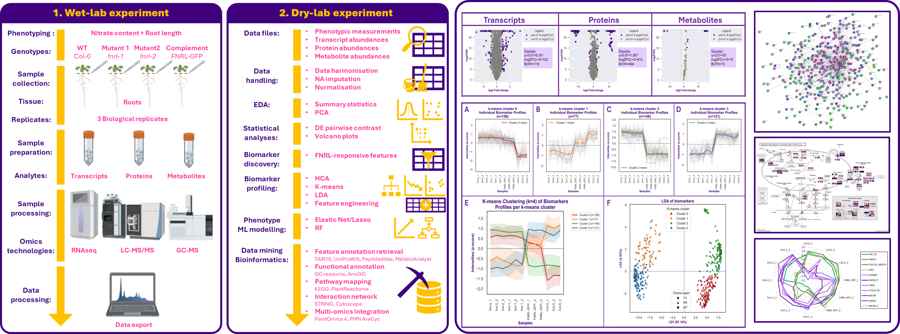
Objective: Develop a computational biomarker discovery pipeline to isolate metabolites specifically associated with Lactobacillus helveticus fermentation in camel milk, and determine whether co-culture with L. bulgaricus or S. thermophilus induces synergistic or antagonistic metabolic effects.
Dataset: Untargeted UPLC-MS/MS metabolomics dataset covering 13,400 metabolites, including 3,632 identified compounds, generated from camel and bovine milk fermented under mono- and co-culture conditions.
Methods: Three-way ANOVA, PCA, LDA, HDBSCAN, k-means, spectral clustering, self-organising maps (SOM), Random Forest classification, feature importance ranking, metabolite annotation, superclass analysis, and pathway exploration using MetaboAnalyst and external metabolic databases.
Technical highlights: Python • metabolomics • feature selection • clustering • Random Forest • biomarker discovery • pathway analysis • Side tool: in silico protein digestion
Status: Article submitted
Final report Python code and Jupyter notebook Related bioinformatics tool Associated publication
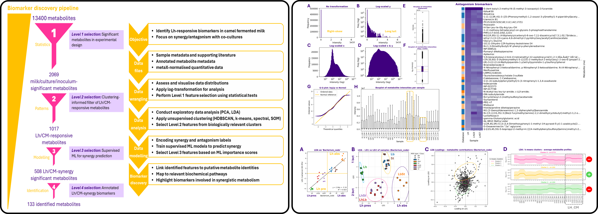
Objective: Develop a machine learning framework to identify mixture responses showing positive or negative deviations from model-predicted additive behaviour between phenolic compounds across multiple antioxidant assays, using observed-versus-predicted absorbance behaviour to reveal non-additive biochemical effects.
Dataset: Experimental antioxidant dataset comprising individual standards and binary mixtures (CB1–CB5) tested across multiple assay systems, with absorbance measurements collected for pure compounds and combinations under controlled concentrations.
Methods: Exploratory data analysis, assay-wise regression modelling, XGBoost prediction, residual-based synergy scoring, threshold optimisation, confusion matrix evaluation, feature importance ranking, and comparative interpretation across antioxidant assay types.
Technical highlights: Python • XGBoost • regression modelling • residual scoring • assay comparison • feature interpretation
Status: Article published in Scientific Reports
Objective: Identify peptide biomarkers associated with wheat genotype groups and flour-quality protein expression, using statistical learning and machine learning to support biomarker-assisted selection in bread wheat.
Dataset: Large-scale proteomics dataset comprising thousands of peptides derived from flour proteins quantified across a broad panel of wheat genotypes, integrated with genotype metadata and protein annotation.
Methods: Data normalisation, correlation analysis, t-tests, ANOVA, hierarchical clustering, k-means clustering, self-organising maps (SOM), PCA, LDA, Random Forest, SVM, MLP neural network, and stacked ensemble modelling for genotype classification and biomarker ranking.
Technical highlights: Python • proteomics • biomarker discovery • clustering • stacked machine learning • classification • feature ranking
Status: Article in preparation
Final report Python code and Jupyter notebook
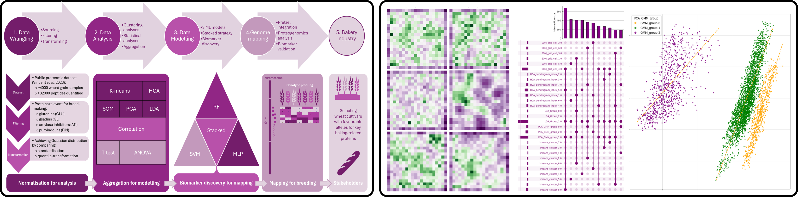
Objective: Develop a reproducible NLP and machine learning framework to analyse the thematic evolution of a scientific career through publication metadata, abstracts, keywords, and semantic content, with the goal of identifying major research phases, transitions, and future directions.
Dataset: Curated corpus of personal scientific publications spanning multiple years, integrating titles, abstracts, keywords, journal metadata, authorship patterns, and publication timelines.
Methods: Text preprocessing, tokenisation, TF-IDF, topic modelling, keyword frequency analysis, semantic clustering, temporal trend analysis, PCA, LDA, and machine learning-assisted interpretation of research trajectory patterns.
Technical highlights: Python • NLP • topic modelling • TF-IDF • semantic analysis • temporal analytics • machine learning interpretation
Status: Completed analytical report
Final report Python code and Jupyter notebook
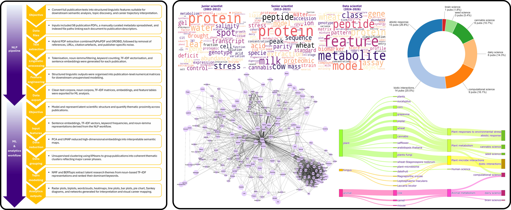
Objective: Develop a machine learning and NLP framework to analyse large-scale UFO sighting reports, identify reporting patterns, classify anomalous events, and prioritise cases with high investigative value.
Dataset: NUFORC database containing more than 150,000 UFO sighting reports, integrating temporal records, geographical metadata, witness descriptions, event characteristics, and free-text narratives.
Methods: Data cleaning, geospatial enrichment, NLP feature extraction from witness reports, exploratory data analysis, temporal and spatial visualisation, classification modelling, anomaly prioritisation, and predictive scoring.
Technical highlights: Python • NLP • geospatial analytics • classification • feature engineering • anomaly scoring • Tableau
Status: Completed analytical report
Final report Python code and Jupyter notebook Interactive Tableau dashboard
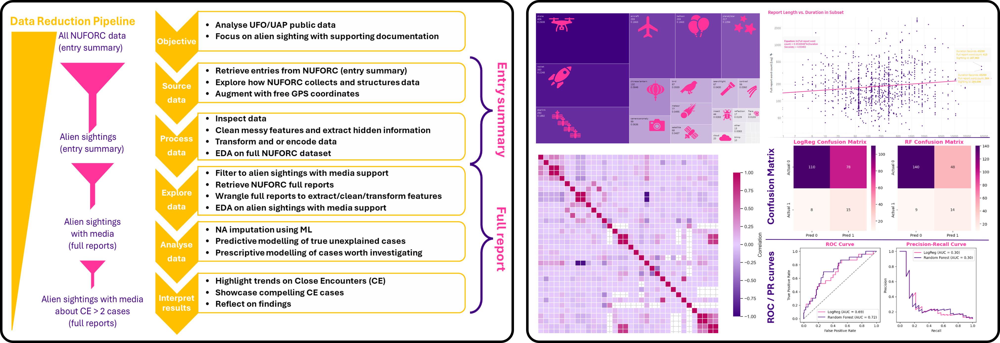
Objective: Develop a machine learning and NLP framework to identify compatible matches between dating profiles by combining structured demographic features, personal preferences, and free-text self-descriptions.
Dataset: Large-scale dating profile dataset including demographic variables, lifestyle attributes, preferences, and millions of words extracted from personal essays written by users.
Methods: Text preprocessing, tokenisation, lemmatisation, topic modelling (LDA), feature encoding, clustering, cosine similarity, nearest-neighbour matching, and interactive match retrieval.
Technical highlights: Python • NLP • topic modelling • clustering • cosine similarity • recommendation logic • Gradio interface • Tableau
Status: Completed machine learning project
Final report Python code and Jupyter notebook Interactive Tableau dashboard
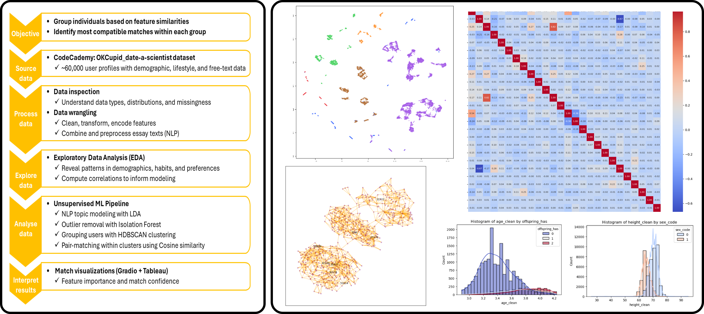
Objective: Explore large-scale scientific publication metadata to identify bibliometric trends, publication patterns, dominant research topics, and long-term shifts in disciplinary focus.
Dataset: Scientific article metadata dataset containing approximately 120,000 publications with information on titles, authors, publication dates, journals, publishers, languages, article types, references, and subject descriptors.
Methods: Metadata cleaning and wrangling, exploratory data analysis, bibliometric visualisation, subject text preprocessing, TF-IDF vectorisation, and k-means clustering to group fine-grained subject labels into broader thematic categories.
Technical highlights: Python • bibliometrics • metadata analytics • text mining • TF-IDF • k-means clustering • Tableau
Status: Completed analytical report
Final report Python code and Jupyter notebook Interactive Tableau dashboard Raw dataset
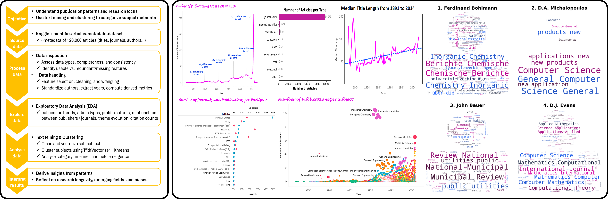
I contributed scientific and technical expertise to two patented inventions arising from applied research in medicinal cannabis and plant-microbiome analysis. These projects translated experimental methods, mass-spectrometry workflows, and analytical findings into intellectual property with potential research and commercial applications.
My contributions included experimental-method development, analytical optimisation, biological interpretation, data generation, and preparation of evidence supporting the patented technologies.
Innovation: Development of a method for extracting proteins from medicinal cannabis tissues, particularly mature plant material containing compounds that can interfere with protein recovery and downstream proteomic analysis.
Scientific context: Cannabis tissues present substantial analytical challenges because of their complex biochemical composition, including cannabinoids, phenolics, pigments, lipids, and other secondary metabolites. Effective protein extraction is therefore essential for reliable bottom-up, middle-down, and top-down proteomics.
Patent: WO 2020/124128 A1 / CA 3122758 A1
Method of Protein Extraction from Cannabis Plant Material
Technical highlights: medicinal cannabis • protein extraction • sample preparation • proteomics • LC-MS/MS • analytical optimisation • intellectual property
Innovation: Development of methods for profiling microorganisms associated with plants, supporting rapid characterisation of plant-associated microbial communities.
Scientific context: Plant microbiomes can influence plant health, growth, productivity, stress tolerance, and disease. Analytical methods capable of profiling plant-associated microorganisms can therefore support crop research, disease surveillance, biological-product development, and microbial ecology.
Patent: US 2022/0333151 A1
Plant Microbiome and Methods for Profiling Plant Microbiome
Technical highlights: plant microbiome • microbial profiling • MALDI mass spectrometry • microbial identification • plant health • applied research • intellectual property
These inventions demonstrate my ability to contribute to research that extends beyond academic publication and produces practical, protectable methodologies.
Technical highlights: patents • intellectual property • applied innovation • medicinal cannabis • plant microbiome • protein extraction • MALDI mass spectrometry • proteomics • method development • research translation
I combine photography, Python programming, image processing, audio design, and video automation to transform my personal photographic archive into short-form visual experiences for social media.
I have been taking digital photographs for approximately three decades, documenting travel, architecture, landscapes, gardens, art, wildlife, patterns, textures, and everyday visual details. In May 2025, I began publishing selected work through @60_seconds_of_calm, a creative project designed to offer viewers a brief, immersive visual pause.
Objective: Create short, atmospheric videos from my photographic archive using a repeatable and largely automated production workflow.
Concept: Each video presents a one-minute visual journey built around a coherent theme, such as castles, churches, national parks, cities, villages, gardens, art, nature, architecture, colour, geometry, or whimsical subjects.
View 60 Seconds of Calm on YouTube View 60 Seconds of Calm on TikTok
I developed a Python workflow that processes folders of photographs and converts them into polished video montages with consistent framing, transitions, compression, audio mixing, and branded opening and closing effects.
Examples of themed photo montages:
Stone Majesty Art Visual Delights Wild Wonders Historic Towns Garden Serenitys Scenic Landsapes Graceful Sanctuaries Ocean Views Peaceful Parks Village Tranquility Looking Down Urban Vibes Pretty plants Neon Pulse
In addition to conventional photo montages, I use scikit-image, NumPy, OpenCV, and Pillow to transform visually striking photographs into dynamic short animations.
This approach is particularly effective for images containing strong geometry, repeating patterns, symmetry, architectural detail, bold colour, unusual texture, or abstract visual structure. Rather than presenting a photograph as a single static frame, I generate a sequence of transformed frames that creates movement, depth, rhythm, and visual immersion.
These transformations allow a single photograph to become a distinct visual artwork, while still preserving the composition, pattern, texture, or architectural structure that made the original image compelling.
Examples of transformed images using Python scikit-image:
Rainbow Spiral Carpet Waves Leaf Swirl LCMS Lens QR code Blur Hypnotic Spin LED Convex
The visual sequence is supported by layered sound designed to reinforce the mood of each video without overpowering the photographs.
I designed a stylised door animation that opens at the beginning of each video and closes at the end. This recurring visual device reinforces the idea of briefly stepping away from daily activity and entering a calm visual space.
Example of Door-Opening and Door-Closing Animation:
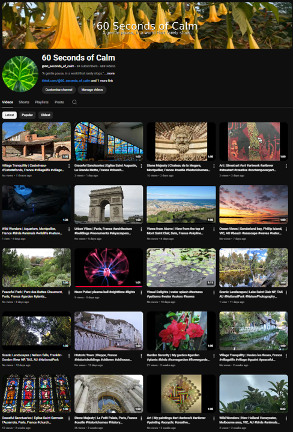
Technical highlights: Python • scikit-image • OpenCV • Pillow • NumPy • ImageIO • MoviePy • FFmpeg • subprocess • batch processing • image transformation • geometric animation • video automation • audio mixing • creative coding • photography • visual storytelling • YouTube • TikTok
This section showcases website projects that I have designed, built, maintained, or substantially improved. My work ranges from hand-coded static websites and chatbot integration to WordPress/Elementor administration, content architecture, production deployment, technical troubleshooting, and ongoing client support.
Objective: Build and maintain a distinctive professional website that presents my scientific career, data science capabilities, portfolio, publications, training, and consulting services in a clear, interactive, and visually recognisable format.
Website: dlf2024.github.io
Methods: Designed and coded the website from the ground up using HTML5, CSS3, and vanilla JavaScript; implemented responsive tabbed sections, reusable content components, custom graphics, structured metadata, accessible navigation, and GitHub Pages deployment. I also developed and connected a Python chatbot hosted separately on Render.
Technical highlights: HTML5 • CSS3 • JavaScript • responsive design • mobile tab positioning • full-screen image viewer • image zoom and panning • accessibility • GitHub Pages • Git/GitHub • SEO metadata • Python • FastAPI backend • rule-based intent recognition • fuzzy FAQ matching • TF-IDF retrieval • Render deployment
Status: Live and under continuous development
Objective: Improve and maintain the public website of Ori Scientific, an Australian food research and development company, while supporting clearer service communication, easier navigation, and a consistent professional presentation.
Website: oriscientific.au
Methods: Conducted a content and usability audit, then implemented updates through WordPress and Elementor. Work includes page editing, template reuse, menu administration, service architecture, post creation, brand-consistent visual updates, and preparation of repeatable maintenance procedures.
Technical highlights: WordPress • Elementor • page templates • responsive content editing • information architecture • menu administration • blog publishing • brand consistency • webmaster documentation
Status: Active client project and ongoing maintenance
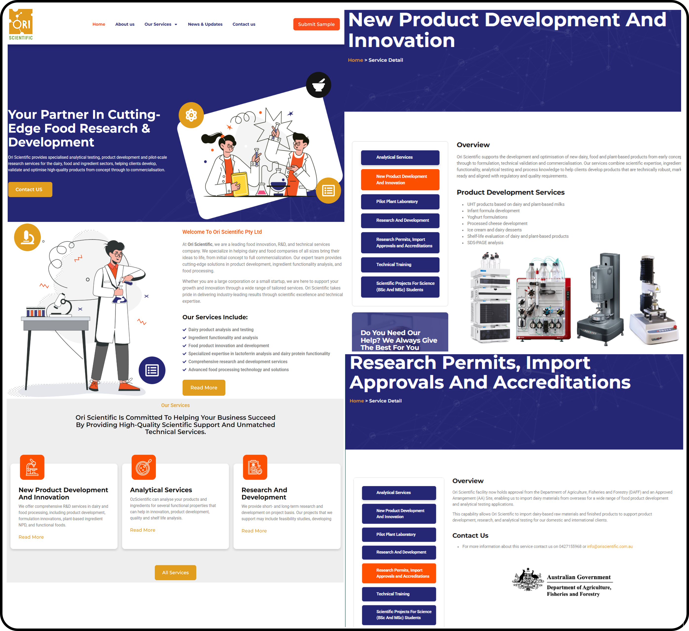
Objective: Design and deploy a production-ready website for Data Biome, a biotechnology startup developing probiotics for ruminants to reduce methane emissions and mitigate greenhouse-gas impact.
Website: databiome.au
Methods: Built the full website locally using HTML5, CSS3, vanilla JavaScript, PHP, and custom media assets, then deployed it to WebCentral hosting through cPanel. The project also included secure contact-form delivery, domain email authentication, responsive testing, and production troubleshooting.
contact.php, PHPMailer, authenticated SMTP, and end-to-end browser-to-inbox testing.Technical highlights: HTML5 • CSS3 • JavaScript • PHP • PHPMailer • SMTP • SPF/DMARC • FFmpeg • WebCentral cPanel • responsive QA
Status: Live production website with ongoing maintenance support
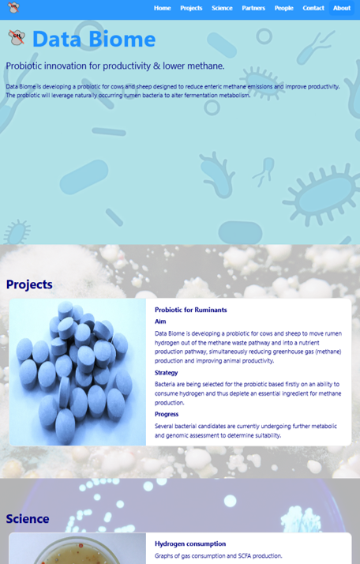
Publications, completed projects, technical insights and updates from my work across artificial intelligence, data science, machine learning, bioinformatics, scientific research and digital development.
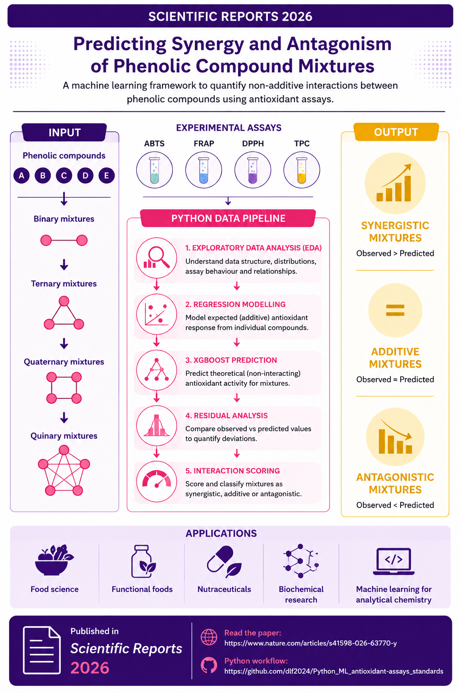
Machine learning can do more than classify samples or predict numerical outcomes. It can also help determine whether compounds in a mixture behave as expected—or interact in ways that produce synergistic or antagonistic responses.
Our latest publication in Scientific Reports uses phenolic antioxidants as a model system to develop a reproducible analytical framework capable of identifying non-additive behaviour in complex mixtures.
Although demonstrated using antioxidant assays, the computational workflow is broadly applicable wherever combinations of compounds can be experimentally measured and modelled, providing a general framework for discovering synergistic, additive and antagonistic interactions.
I am expanding my cloud-computing capability through AWS Educate, using a structured, self-directed learning pathway covering cloud fundamentals, the AWS Management Console, storage, compute, networking, databases, cloud operations, security, serverless computing, artificial intelligence, machine learning, and core AWS concepts.
This training complements my experience in data science, machine learning, bioinformatics, web deployment, and reproducible analytical workflows by strengthening my understanding of cloud infrastructure, scalable computing, managed services, secure resource configuration, and cloud-based analytical environments.
Objective: Build a practical foundation in Amazon Web Services and understand how cloud-based storage, compute, networking, databases, security, and deployment services can support modern data-science and scientific-computing workflows.
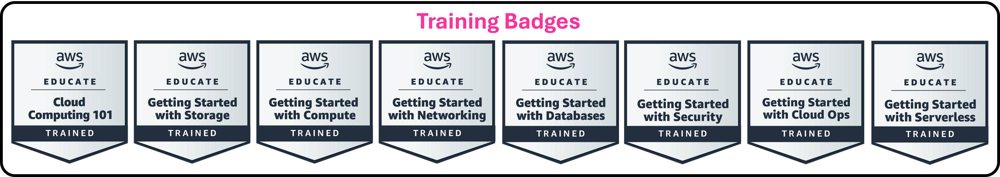
Training focus: Secure browser-based access to AWS services through the AWS Management Console.
This course introduced console navigation, service discovery, dashboard customisation, account monitoring, AWS global infrastructure, payment models, and the factors influencing service costs.
Training focus: Core cloud-computing concepts and foundational AWS services.
The course introduced cloud service and deployment models, AWS global infrastructure, the shared responsibility model, the AWS Well-Architected Framework, and entry-level cloud career pathways.
Training focus: AWS storage services, with particular emphasis on Amazon Simple Storage Service, or Amazon S3.
The course covered object-storage concepts, buckets, objects, storage classes, permissions, security, cost optimisation, and use cases including static websites, backup, archival storage, Internet of Things applications, and big-data analytics.
Training focus: AWS compute services, with particular emphasis on Amazon Elastic Compute Cloud, or Amazon EC2.
The course introduced compute options, instance families, workload requirements, storage choices, security settings, and the practical launch and management of EC2 instances.
Training focus: Cloud-networking fundamentals, with particular emphasis on Amazon Virtual Private Cloud, or Amazon VPC.
The course covered virtual private clouds, public and private subnets, route tables, gateways, IP addressing, security groups, and network access control lists.
Training focus: Cloud-database fundamentals, with particular emphasis on Amazon Relational Database Service, or Amazon RDS.
The course introduced relational and non-relational database concepts, AWS database services, the key features of Amazon RDS, database configuration, and the use of SQL to read and write data.
Training focus: Cloud-operations principles, service monitoring, cost management, and operational best practice.
The course introduced key elements of the AWS Well-Architected Framework, AWS cost-management tools, cloud-operations services, and their configuration.
Training focus: Secure cloud operations, with particular emphasis on AWS Identity and Access Management, or IAM.
The course covered IAM concepts and features, users, groups, roles, permissions, security policies, credential review, and multi-factor authentication.
Training focus: Serverless computing, event-driven architecture, and AWS Lambda.
The course explained the benefits of serverless services, the role of microservices, event-driven design, architectural decoupling, and the configuration and monitoring of AWS Lambda functions.
The training has helped me understand how individual AWS services can be combined within a broader cloud architecture rather than used in isolation.
In parallel with AWS Educate, I use Amazon SageMaker Studio Lab and an AWS Free Tier account as practical learning environments.
I completed the available Getting Started courses first and am progressing through the Artificial Intelligence and Machine Learning series. I plan to continue with the Core Concepts series.
This sequential pathway supports my broader objective of integrating cloud literacy with data science, machine learning, bioinformatics, omics analytics, reproducible workflows, and scientific web-resource development.
Technical highlights: AWS Educate • AWS Management Console • cloud computing • Amazon S3 • Amazon EC2 • Amazon VPC • Amazon RDS • AWS IAM • AWS Lambda • serverless computing • cloud operations • cloud security • SQL • SageMaker Studio Lab • AWS Free Tier • scalable analytics • machine learning • web deployment
I completed the CodeCademy Career Path: Data Scientist — Analytics Specialist, a comprehensive programme combining theory, practical exercises, assessments, and guided projects.
The course strengthened my skills in SQL, Python 3, Tableau, statistical analysis, data visualisation, exploratory data analysis, and analytical storytelling. It also provided a structured framework for moving from raw data to clear, evidence-based conclusions.
View the CodeCademy course syllabus
Training focus: End-to-end data analysis using SQL, Python, Excel, Tableau, statistical methods, exploratory analysis, data visualisation, and reporting.

I applied the Python and data-analysis skills developed through this training to the analysis of a large wheat proteogenomics dataset.
This work involved large-scale data handling, peptide and protein processing, exploratory analysis, visualisation, biological interpretation, and development of reproducible analytical workflows.
Community Resource: Large-Scale Proteogenomics to Refine Wheat Genome Annotations
Project: Analysis of metadata from approximately 120,000 scientific publications.
The final CodeCademy portfolio project was open-ended, allowing me to select a dataset and define my own analytical questions. I chose a Kaggle dataset containing metadata from scientific publications to investigate publication activity, journals, publishers, authors, citation patterns, publication types, languages, and research subjects.
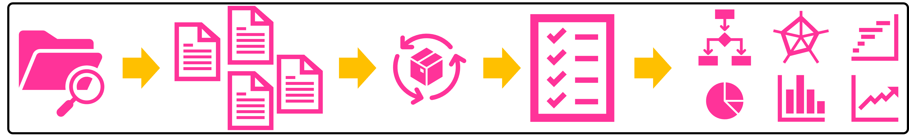
I began by defining a set of questions to guide data cleaning, feature engineering, exploratory analysis, and visualisation.
Tools: Excel, Python, pandas, Jupyter Notebook, and Tableau.
Initial data assessment helped determine which variables were informative, which fields required transformation, and where missing, inconsistent, or poorly formatted values were present.
View the GitHub repository, raw and cleaned datasets, and Jupyter notebook
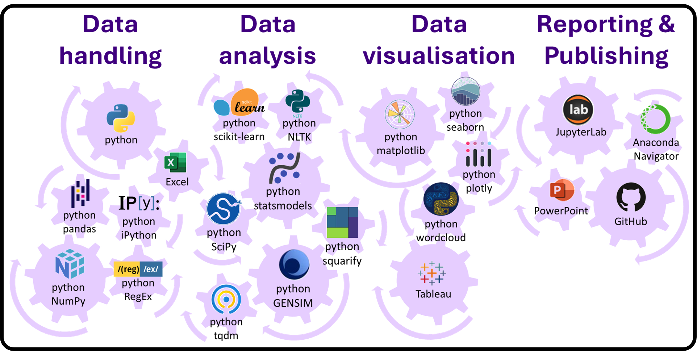
Exploratory analysis was used to identify long-term trends, dominant categories, unusual observations, relationships between variables, and potential dataset biases.
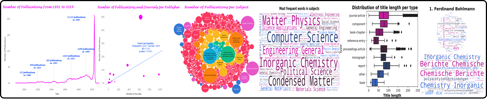
I transformed the cleaned and analysed dataset into an interactive Tableau dashboard that allows users to explore publication trends, categories, publishers, journals, authors, citation behaviour, and research subjects.
I also prepared a structured report describing the analytical process, visualisations, observations, limitations, and proposed future directions.
Explore the Tableau Public dashboard Read the project report
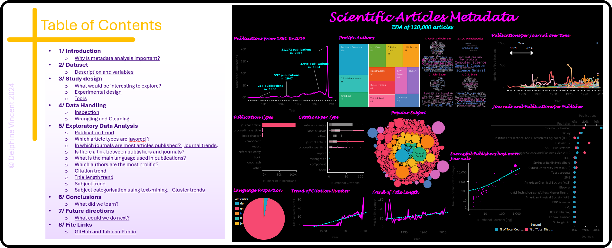
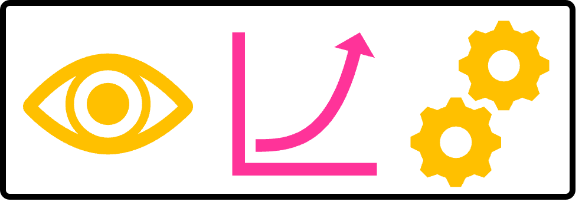
The project provided valuable insight into the structure of the dataset, but the results must be interpreted in the context of its source, coverage, metadata quality, and possible sampling bias.
This project demonstrated my ability to independently define an analytical problem and deliver a complete workflow from raw data to interpretable outputs.
Technical highlights: CodeCademy • data science • analytics • Python • pandas • Jupyter Notebook • SQL • Excel • Tableau • exploratory data analysis • data cleaning • feature engineering • text analysis • word clouds • publication metadata • dashboard development • analytical reporting • GitHub • data storytelling
I completed the CodeCademy Career Path: Data Scientist — Machine Learning Specialist, a comprehensive programme combining mathematical foundations, statistics, Python programming, machine learning theory, practical exercises, assessments, and applied projects.
The course covered both supervised and unsupervised learning for classification, regression, clustering, recommendation, anomaly detection, and pattern discovery. Topics included ensemble methods, support vector machines, recommender systems, naïve Bayes, deep learning, neural networks, model evaluation, and feature engineering.
View the CodeCademy course syllabus
Training focus: End-to-end machine learning using Python, with emphasis on data preparation, modelling, validation, interpretation, and deployment-oriented thinking.

Project: Unsupervised matching of similar users from an OKCupid Date-a-Scientist dataset.
The final portfolio project required analysis of a dating-app dataset and the application of machine learning in a self-defined way. Because the dataset did not contain a single target variable representing compatibility or closeness, I designed an unsupervised recommendation workflow.
The objective was to structure the user-profile data, reduce noise, identify groups of broadly similar individuals, and calculate pairwise similarity within those groups so that the application could suggest relevant matches.
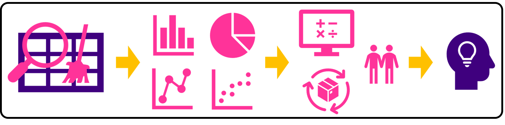
Context: The dataset did not contain a predefined outcome representing compatibility, match quality, or interpersonal closeness.
This ruled out a conventional supervised target-prediction approach and required an unsupervised strategy to organise the profiles and identify similarities.
Rationale: I combined exploratory data analysis, natural language processing, anomaly detection, dimensionality reduction, clustering, and pairwise similarity to create a structured recommendation pipeline.
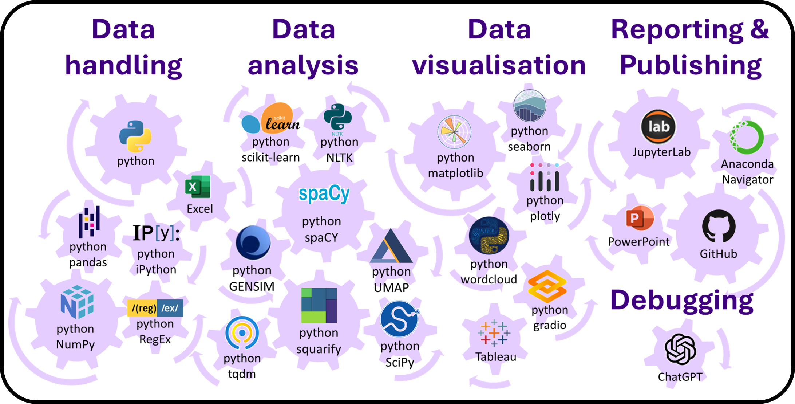
The dataset contained numerical, categorical, ordinal, nominal, and free-text variables, as well as missing values, inconsistent entries, outliers, and varying levels of profile completeness.
View the GitHub repository, cleaned and encoded dataset, and Jupyter notebook
Exploratory analysis was used to understand the composition of the user population, identify dominant profile characteristics, evaluate missingness, and reveal broad user archetypes.
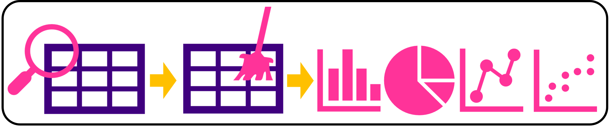
The dataset included ten essay-style profile fields containing free text. These fields were combined and analysed using Latent Dirichlet Allocation.
Features were weighted according to their perceived relevance to matching, allowing more important profile characteristics to contribute more strongly to similarity calculations.
A correlation matrix was used to examine relationships between variables, identify potential redundancy, and support missing-value decisions.
I used Isolation Forest with optimised parameters to detect and remove atypical observations that could introduce noise into clustering and matching.
I used UMAP to visualise the high-dimensional profile space and HDBSCAN to identify naturally occurring groups of users.
Potential matches were identified within HDBSCAN clusters using cosine similarity.
I developed an interactive Gradio interface to make the matching results easier to explore.
I used Tableau and PowerPoint to communicate the structure of the dataset, main user archetypes, modelling workflow, cluster behaviour, matching results, limitations, and future-development options.
Explore the Tableau Public dashboard Read the project report

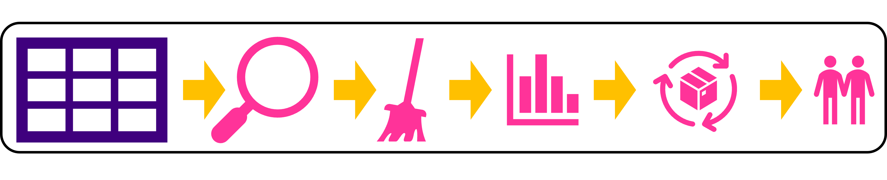
This project demonstrated my ability to design and implement a complete unsupervised machine-learning and recommendation workflow using mixed structured and unstructured data.
Technical highlights: CodeCademy • machine learning • Python • pandas • scikit-learn • exploratory data analysis • NLP • LDA • feature engineering • missing-value analysis • Isolation Forest • anomaly detection • UMAP • HDBSCAN • clustering • cosine similarity • recommender systems • F1 score • Gradio • Tableau • GitHub • data storytelling
I have completed the CodeCademy Career Path: Data Scientist — Natural Language Processing Specialist, a comprehensive programme focused on transforming language into analysable data, extracting meaning from text, developing chatbots, and building neural-network models. The course combines theory, practical exercises, assessments, and applied projects.
The programme covered Python, SQL, data manipulation, text preprocessing, linguistic analysis, feature engineering, machine learning, deep learning, and model evaluation. It also explores practical NLP applications including text classification, document similarity, information retrieval, sentiment analysis, topic discovery, and conversational systems.
View the CodeCademy course syllabus
Training focus: End-to-end natural language processing using Python, with emphasis on preparing unstructured text, extracting meaningful features, developing and validating models, and translating language data into useful analytical outputs.

I completed the CodeCademy Skill Path: Build a Website with HTML, CSS and GitHub Pages, a practical course covering website structure, styling, responsive design, development workflows, and publication through GitHub Pages.
After completing the course, I applied these skills by designing, coding, testing, and publishing my professional website—the website you are currently browsing.
View the CodeCademy course syllabus
Training focus: Build and publish a responsive website using HTML, CSS, JavaScript, GitHub, and GitHub Pages.
I used the course as the foundation for creating a complete professional website presenting my biography, technical skills, scientific background, data-science projects, learning activities, publications, resume, and consulting services.
I used the website project to develop a personal visual identity based on a simple, high-contrast design with vivid colours and recognisable branding.
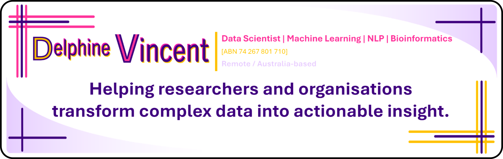
I developed the website using Visual Studio Code with the Live Server extension, allowing me to edit, preview, test, and debug the site locally.
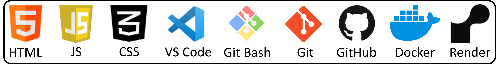
Once changes were tested locally, I used GitHub Desktop and GitHub Pages to manage versions and publish the website.
The website includes a fixed navigation bar that provides direct access to the main sections.
Long sections are divided into selectable tabs so that users can focus on one topic at a time without being presented with an excessively long initial page.
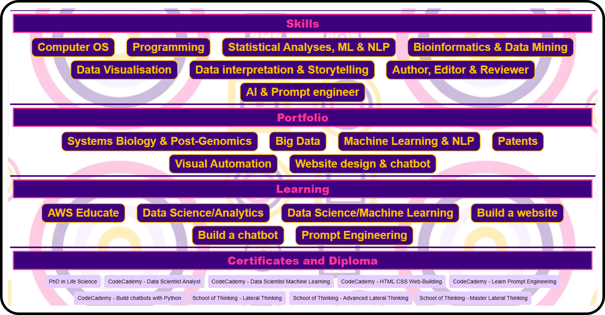
The website uses responsive CSS rules to maintain readability and visual balance across desktop monitors, tablets, and smartphones.
Images are used throughout the website to improve visual communication and demonstrate my scientific, analytical, technical, and creative work.
The website provides direct access to publications, presentations, dashboards, source-code repositories, professional profiles, and downloadable documents.
I incorporated accessibility features to improve navigation and interpretation for users with different needs and input methods.
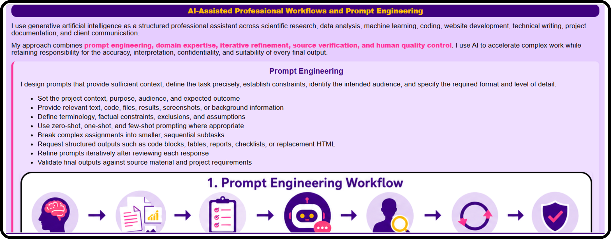
The website is an actively maintained professional resource rather than a static course exercise.
This project demonstrated my ability to move from introductory web-development training to the design, deployment, maintenance, and continuous improvement of a complete professional website.
Technical highlights: CodeCademy • HTML5 • CSS3 • JavaScript • responsive web design • Flexbox • Visual Studio Code • Live Server • Git • GitHub Desktop • GitHub Pages • semantic HTML • accessibility • ARIA • mobile navigation • interactive tabs • image lightbox • version control • website maintenance
I completed the CodeCademy Skill Path: Build a Chatbot in Python, a practical course combining Python programming, natural language processing, data science, machine learning, and artificial intelligence.
The course introduced several chatbot architectures, from deterministic rule-based systems to retrieval-based approaches and more advanced generative models.
View the CodeCademy course syllabus
Training focus: Design and implement chatbot systems using Python, NLP, machine learning, retrieval methods, and conversational logic.
The course included several guided projects covering conversational systems, language processing, and text-based machine learning.
View the chatbot notebooks on GitHub View the machine-translation notebooks on GitHub View the Twitter text-analysis notebooks on GitHub
Project: Development of a closed-domain chatbot for my professional website.
I used the course as the foundation for designing and deploying a custom chatbot that helps visitors navigate my website and retrieve concise information about my biography, skills, portfolio, learning activities, publications, and professional experience.
I developed a custom backend using Python and FastAPI to receive chatbot requests, validate inputs, process user queries, and return structured responses.
The FastAPI backend is deployed on Render, allowing the GitHub Pages website to communicate with a separately hosted Python application.
I integrated a custom JavaScript chat widget into the professional website so visitors can interact with the chatbot directly from any section of the page.
The chatbot uses several complementary methods rather than relying on a single matching strategy.
faqs.json file for predefined answers
Frequently asked questions are stored in a structured
faqs.json file so that common queries can be answered consistently.
I added a lightweight TF-IDF retrieval system that indexes the main website sections and identifies the content most relevant to a visitor’s query.
The backend maintains a local HTML snapshot of the professional website so that the chatbot can index website content without repeatedly loading the live site.
I created an administrative /reindex endpoint that allows the
chatbot knowledge resources to be refreshed without rebuilding the full application.
The chatbot is designed to provide both concise answers and practical navigation support.
I designed the chatbot to avoid collecting or reproducing unnecessary personal information.
The chatbot uses a linked GitHub and Render workflow for version control, deployment, and maintenance.
The backend was structured so that retrieval, FAQ handling, intent recognition, indexing, and response generation could be maintained as separate components.
The website chatbot currently combines deterministic and retrieval-based methods to provide context-aware responses grounded in the website content.
The chatbot widget is located in the bottom-right corner of this website. Open the widget and try a question such as:
This project demonstrates my ability to move from guided chatbot training to the design, deployment, maintenance, and continuous improvement of a complete web-integrated conversational application.
Technical highlights: CodeCademy • Python • FastAPI • JavaScript • chatbot development • natural language processing • rule-based systems • retrieval-based chatbots • RapidFuzz • fuzzy matching • JSON • FAQ retrieval • TF-IDF • cosine similarity • website indexing • Render • GitHub • API deployment • reindexing • privacy-aware design • retrieval-augmented generation
I completed the CodeCademy course: Learn Prompt Engineering, which introduced practical techniques for communicating effectively with generative artificial intelligence systems.
The course strengthened my ability to provide clear context, define constraints, structure complex requests, refine outputs iteratively, and use generative AI as a productive assistant within analytical, scientific, technical, and creative workflows.
View the CodeCademy course syllabus
Training focus: Design prompts that give generative AI systems sufficient context, clear instructions, appropriate examples, and well-defined output requirements.

Effective prompting begins by giving the AI system enough background to understand the task, audience, subject area, and intended outcome.
Zero-shot prompting asks the AI system to complete a task using only the instruction and context provided, without supplying a worked example.
One-shot and few-shot prompting provide one or more examples to demonstrate the desired style, structure, terminology, or decision pattern.
Large or multidisciplinary tasks are more reliable when divided into a clear sequence of smaller steps.
Prompt engineering is an iterative process. I frequently refine an initial request after reviewing the first response, clarifying requirements, correcting assumptions, or adding missing constraints.
The course introduced retrieval-augmented generation, or RAG, in which relevant information is retrieved from a defined knowledge source and supplied to a generative model before a response is produced.
I use structured prompts to collaborate with generative AI, particularly ChatGPT, across scientific, analytical, coding, web-development, and professional-communication projects. I provide the relevant context, source material, constraints, and expected output, then review and refine the result rather than accepting it uncritically.
For complex professional tasks, I generally use a structured, multi-step workflow.
When working on code, I provide the existing script, the intended behaviour, relevant inputs and outputs, and the exact error or limitation that needs to be addressed.
For scientific writing, I provide the original text, the study context, the underlying results, reviewer comments, and any journal-specific constraints.
For website work, I provide the existing HTML or CSS block and describe the visual or functional change required.
I use generative AI as an assistant rather than an autonomous decision-maker. I remain responsible for checking the accuracy, suitability, and integrity of every final output.
Prompt design also requires careful consideration of privacy and data sensitivity. I adapt the workflow according to the confidentiality of the material.
Prompt engineering strengthens my ability to use generative AI productively while retaining scientific judgement, technical oversight, and responsibility for final decisions.
Technical highlights: CodeCademy • prompt engineering • generative artificial intelligence • context setting • zero-shot prompting • one-shot prompting • few-shot prompting • task decomposition • iterative refinement • retrieval-augmented generation • ChatGPT • scientific editing • Python development • data analysis • machine learning • website development • human-in-the-loop validation • privacy-aware AI workflows